ENXOVAL
Descomplicado
Guia completo para gestantes
Dayane Dos Anjos
Olá, eu sou a Dayane Dos Anjos, mãe, consultora em amamentação, sono e cuidados com o bebê. Sou completamente apaixonada por bebês e tudo que se refere a eles.
Sou mãe da Letícia e do Daví, e minha jornada no mundo da maternidade começou com muitas dúvidas e desafios, que me levaram a buscar constantemente informações e soluções práticas para tornar essa fase tão especial mais tranquila e prazerosa para as mães que me acompanham. Ao longo dos anos, adquiri conhecimento e experiência, não apenas como mãe, mas principalmente como profissional, orientando milhares de famílias a encontrar o equilíbrio e a serenidade no cuidado com seus pequenos.
Foi essa paixão e dedicação que me motivaram a criar o "Enxoval Descomplicado: Guia completo para Gestantes". Este e-book é fruto de muita pesquisa, amor e vontade de compartilhar com você tudo o que aprendi.
Meu objetivo é guiá-la nesse momento tão único, proporcionando dicas valiosas e informações práticas para que você se sinta segura e confiante em cada escolha. Estou aqui para caminhar ao seu lado nessa jornada incrível, ajudando você a preparar um enxoval completo, prático e descomplicado, para que possa desfrutar ao máximo cada momento com o seu bebê.
como vai ser quando
Você se prepara para o parto, monta o quartinho e escolhe cada detalhe do enxoval com tanto carinho… mas sabe como vai ser quando o bebê chegar?
O curso Manual do Recém-Nascido te mostra como se preparar e acolher seu recém-nascido desde o primeiro dia, te mostra como adaptar o bebê ao berço, como amamentar sem dor, e como fazer todos os cuidados com o bebê.
Para que você se sinta segura, tranquila e pronta para viver esse início com amor e confiança.
QUERO!Querida mamãe, seja muito bem-vinda ao Enxoval Descomplicado: Guia completo para Gestantes, este e-book foi cuidadosamente elaborado para te ajudar a se preparar da melhor forma possível para a chegada do seu bebê. Sei que este é um momento único e especial, cheio de expectativas e, muitas vezes, de dúvidas também.
Com a variedade de produtos disponíveis no mercado, pode ser desafiador saber o que realmente é necessário, que você irá usar muito, e o que pode ser dispensado porque provavelmente nem será usado. Com este e-book você irá saber o que está comprando e o porquê, além de evitar compras desnecessárias economizando tempo e dinheiro.
O objetivo deste e-book é fornecer um guia completo e prático para a montagem do enxoval do seu bebê. Aqui, você encontrará uma lista detalhada de todos os itens necessários, divididos por categorias, com explicações sobre a utilidade de cada produto e a minha opinião sincera sobre o que realmente é importante se atentar, na hora de escolher cada item. Meu intuito é te ajudar a fazer boas escolhas, informadas e seguras do que é o melhor para o enxoval do seu bebê.
Cada capítulo deste e-book é dedicado a uma categoria específica do enxoval do bebê, no início de cada capítulo, você encontrará uma lista completa dos itens dessa categoria, com suas quantidades sugeridas.
Nas páginas seguintes, você encontrará a descrição sobre a utilidade de cada produto, como suas características, opções, variações, e minha opinião sobre.
Terá sempre dicas valiosas para ajudá-la a fazer a melhor escolha na hora da compra, considerando a frequência de uso e a importância de cada produto no dia a dia do seu bebê.
As listas de cada categoria estão bem completas, com tudo que normalmente os sites, as blogueiras e as listas de maternidades solicitam. Porém, apesar de estar presente nas listas não significa que esses itens serão realmente importantes e necessários para a sua realidade.
Então, para facilitar a navegação e a compreensão, utilizei um sistema de cores que indica a importância de cada item como: essencial, variável, questionável, desnecessário e posterior.
Fique tranquila, já já tudo fará sentido, após cada lista de cada categoria, explico e detalho cada ítem, assim você entenderá o nível de importância e o porquê da classificação.
A aventura de preparar o enxoval do seu bebê está prestes a começar, e é uma das fases mais lindas e empolgantes da gestação. É natural querer comprar tudo de tudo, afinal, cada item parece irresistível de tão fofo e lindo que é. Mas, antes de sair comprando o mundo, respire fundo, leia esse e-book todinho, e vamos juntas viver essa aventura deliciosa que é escolher o melhor para o enxoval do seu bebê.
Vamos lá, a jornada começa agora!
Em cada categoria, você encontrará uma lista de produtos com a minha curadoria, selecionada nas duas principais plataformas de compras online. Essas listas foram pensadas com muito cuidado para facilitar a sua jornada na montagem do enxoval, garantindo opções práticas e de qualidade.
Cada plataforma possui suas próprias características e vantagens, seja em relação ao preço, frete, variedade ou até mesmo condições de pagamento. A escolha da plataforma ideal fica a critério de cada família, de acordo com suas preferências e necessidades.
Minha dica é: monte a sua lista de enxoval nas plataformas que você mais gosta ou confia e aproveite para comparar os produtos disponíveis. Avalie os preços, as avaliações de outros compradores, as características dos itens e até as vantagens oferecidas por cada plataforma, como frete e condições de pagamento. Com essa análise, você conseguirá fazer escolhas mais informadas e acertadas, garantindo um enxoval completo, funcional e perfeito para o seu bebê!
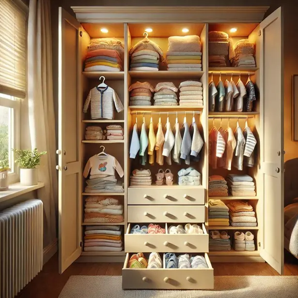
A chegada de um bebê é um momento mágico e repleto de preparativos, entre as muitas escolhas que os novos pais precisam fazer, a seleção das roupinhas do bebê é uma das mais divertidas e emocionantes. Quem resiste às peças pequeninas e adoráveis? No entanto, é importante lembrar que os bebês crescem muito rápido e, com isso, muitas roupinhas acabam sendo usadas por pouco tempo.
Na hora de escolher as roupinhas se atente a estação do ano e o clima da sua cidade. Um bebê que nasce em Curitiba, por exemplo, precisará de roupinhas mais quentes, como macacões de soft e casacos, especialmente nos meses de inverno, por outro lado, um bebê que nasce no Nordeste não usará essas roupas pesadas, já que o clima é quente praticamente o ano todo. Adaptar o guarda-roupa do bebê ao clima local é fundamental para evitar gastos desnecessários.
A lista de roupinhas que você encontrará neste e-book é completa e abrange uma ampla variedade de peças para diferentes situações e climas. No entanto, isso não significa que você precisará de todas essas peças. Use essa lista como um guia e adapte-a à sua realidade, considerando o clima da sua região e as suas necessidades específicas.
Quando falamos de enxoval de bebê normalmente pensamos no primeiro ano, então compramos os tamanhos RN, P, M, G e GG, mas não precisa comprar tudo de uma vez, você pode comprar o básico como meias, bodys e macacões, e o resto ir comprando conforme a necessidade. Outra opção é comprar pelo menos os tamanhos RN e P que serão usados mais de imediato, e depois você terá tempo para comprar conforme for tendo necessidade.
A quantidade ideal de cada peça é de 06 a 08, é a quantidade mínima mas que atende bem. Na lista vou colocar 08 de cada peça para que possa ter rotatividade, tempo hábil entre a lavagem, secagem e uso. Nem sempre o bebê usa apenas um conjunto de roupas por dia, muitas coisas acontecem, fralda pode vazar, leite pode vazar, o bebê pode regurgitar… algumas vezes mais de uma vez por dia, e isso se torna parte do dia a dia. Porém, se você mora em cidade quente, onde a roupa seca rápido, pode ter 06 peças de cada sem problemas.
Vou colocar aqui uma tabela para você ter uma média de tamanho de roupinhas para cada idade. Esta tabela te dá uma média, seu bebê pode seguir a risca como não, use apenas como base para te ajudar a relacionar o tamanho da roupa do bebê de acordo com a estação do ano que estará na época.
| Tam. | Idade | Altura | Peso |
|---|---|---|---|
| P | 1 a 3 meses | 55 a 61 cm | 3,6 a 5,7 kg |
| M | 3 a 6 meses | 61 a 66 cm | 5,7 a 7,5 kg |
| G | 6 a 9 meses | 66 a 70 cm | 7,5 a 8,9 kg |
| GG | 9 a 12 meses | 70 a 73 cm | 8,9 a 10 kg |
As roupinhas tamanho RN (recém-nascido) são frequentemente subestimadas, muitas pessoas em volta da mãe dizem que nem chega a usar essas roupinhas de tão pequenas. Porém, trabalhando tantos anos com bebês digo que as roupinhas RN são sim muito importantes e bastante utilizadas nos primeiros dias e semanas de vida do bebê.
No início tudo fica grande para o bebê, até a roupinha RN, então ir direto para o tamanho P vai ficar enorme para o bebê. Dependendo da marca e do modelo, as roupinhas RN podem vestir bebês até cerca de 5 quilos. Então a menos que seu bebê tenha previsibilidade de nascer com 4kg ou mais, eu indico que compre sim roupinhas tamanho RN.
Na hora de escolher as roupinhas para o bebê, é importante considerar não apenas o estilo, mas também o conforto e a praticidade. Aqui estão algumas dicas do que evitar para garantir que seu pequeno esteja sempre confortável e feliz:
Bordados Grandes: Roupinhas com bordados grandes podem parecer adoráveis, mas o avesso desses bordados geralmente é duro e desconfortável, especialmente se estiver em contato direto com a pele delicada do bebê. Prefira roupas com bordados pequenos ou sem bordados, para evitar qualquer irritação.
Botões nas Costas: Evite roupinhas que possuem botões nas costas. Embora possam parecer bonitinhas, esses botões dificultam na hora de vestir e fechar a roupa no dia a dia. Além disso, podem causar desconforto para o bebê ao deitar de costas. Opte por roupas com aberturas frontais ou laterais que sejam mais práticas e confortáveis.
Capuz ou Gola Volumosa: Roupas com capuz ou gola volumosa não são ideais para o dia a dia. Esses itens podem ser desconfortáveis para o bebê, além de o capuz não parar bem na cabeça pequena do bebê. Roupas com capuz são melhores para passeios curtos em dias frios, mas não para o uso contínuo.
Elásticos Largos na Cintura: Elásticos largos na cintura podem apertar a barriguinha do bebê e deixá-lo desconfortável. Prefira roupas com elásticos suaves e ajustáveis, que não pressionem a pele do bebê. Roupinhas com cintura elástica macia garantirão que o bebê se mova livremente e com conforto.
Aqui está um item que toda mãe adora: a saída de maternidade. Esta é uma roupinha linda para o grande dia de voltar para casa com o bebê nos braços.
Ao escolher a saída de maternidade, leve em consideração o clima da época em que o bebê nascerá, por exemplo, em Curitiba, geralmente as saídas de maternidade são geralmente feitas de lã acrílica para manter o bebê bem quentinho. No entanto, essa peça não é adequada se o bebê nascer no verão ou em uma cidade quente, da mesma forma, não faz sentido se apaixonar por uma roupa fresquinha se o bebê nascer no inverno. Portanto, tenha em mente a estação do ano e o clima da sua cidade antes de fazer a compra.
Há superstições relacionadas às cores da saída de maternidade, cada cor tem um significado especial. Se você é supersticiosa, aqui estão alguns significados comuns para cada cor:
Os macacões são as peças mais quentinhas do enxoval do bebê, é o que a gente usa por cima do body e da calça.
Tem várias opções de tecidos, para você escolher de acordo com a estação ou temperatura da sua cidade. Vou colocar uma breve descrição de cada um, mas leve em consideração além do conforto o clima e a estação do ano que seu bebê irá nascer.
Algodão: Ideal para qualquer estação, o algodão é macio, respirável e antialérgico. É perfeito para o dia a dia do bebê.
Malha: Leve e confortável, a malha tem um pouco de elasticidade é uma ótima opção para o verão, permitindo que a pele do bebê respire.
Plush: Mais grosso e quente, o plush é indicado para os dias frios de inverno, mantendo o bebê aquecido. É muito quentinho, você vai amar esse tecido para dias muito frios, abaixo de 14ºC
Suédine: Um tecido macio e quentinho, ideal para climas frios. É confortável e protege bem contra o frio.
Os macacões podem ter fechamento com zíper ou botões, na parte da frente ou na parte de baixo. Se você puder dar preferência pelos de zíper é muito bom, porque são extremamente práticos, especialmente durante as trocas de fraldas noturnas. Eles permitem abrir e fechar a peça rapidamente, sem precisar lidar com vários botões. E se tiver possibilidade prefira modelos com zíper duplo, que podem ser abertos tanto de cima quanto de baixo, facilitando ainda mais as trocas. Certifique-se de que o zíper possui uma proteção de tecido no final, para não incomodar a pele delicada do bebê. Os botões são bons também, e cumprem super bem seu papel, mas não tem como competir com a praticidade do zíper.
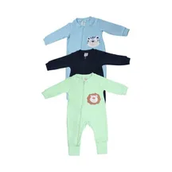
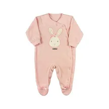
Os modelos com pézinho parecem bons para manter os pés do bebê aquecidos e protegidos, especialmente nos dias mais frios, porém seu uso é menor, porque só veste bem se estiver no tamanho exato do bebê. Se estiver maior fica caindo e se se estiver menor não deixa o bebê esticar as perninhas. Por isso te aconselho a comprar pelo menos a maioria sem pézinho, porque permitem um ajuste mais flexível conforme o bebê cresce e podem ser combinados com meias ou sapatinhos, proporcionando mais versatilidade.
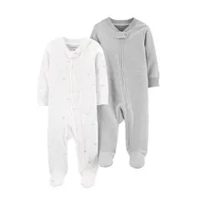
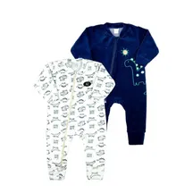
Alguns macacões possuem dobras nas extremidades dos pés e das mãos, que podem ser dobradas para formar sapatinhos e luvinhas. Esses modelos também são conhecidos pelo nome Vira pé. Essa característica é excelente, porque você pode usar para aquecer as extremidades, sem limitar o uso, pois se adapta ao tamanho do bebê, te permitindo usar a peça por mais tempo.
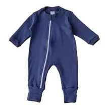
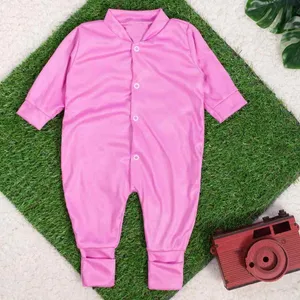
Os bodies são peças fundamentais no enxoval do bebê e são as roupinhas mais usadas! Eles ficam em contato direto com o corpinho do bebê e podem ser usados sozinhos ou por baixo de macacões.
Os bodies vêm em opções de manga curta, longa e regata, cada uma adequada para diferentes temperaturas. É importante considerar a estação do ano e o clima da sua cidade ao fazer a compra.
Não vale a pena comprar muitos bodies de manga longa se seu bebê vai nascer em uma época ou cidade quente, nem comprar bodies de manga curta se ele vai nascer em uma época ou cidade fria. Dependendo do seu caso, pode ser necessário comprar apenas um ou outro, ou um pouco de cada. Lembre-se, o bebê veste o mesmo que os adultos, ou no máximo uma peça a mais.Então, se os adultos estão de shorts e camiseta, o bebê também estará assim, ou no máximo com uma manguinha comprida.
Existem dois modelos de fechamento de gola que são mais comuns: a gola com botão de pressão e a gola envelope. Alguns modelos fecham na frente com tecido transpassado e botões de pressão, ou são amarrados ou abotoados na parte de trás do pescoço, mas esses não são tão práticos para o dia a dia com bebê.
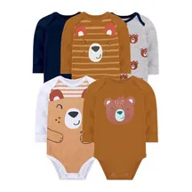
Tem um ou dois botões na lateral, na parte de um dos ombros. Esse design facilita a passagem da cabeça do bebê e é fácil de manusear.
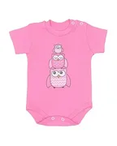
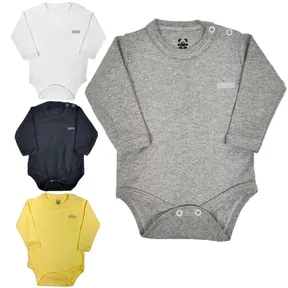
Não possuem botão, a peça é costurada de forma que os tecidos dos ombros se sobrepõem, proporcionando uma grande abertura para passar a cabeça ou até o corpinho todo do bebê, se decidir tirar ou colocar por baixo. Isso é especialmente útil em situações de emergência, como quando o body está muito sujo porque a fralda vazou. Esse modelo de gola é o que eu mais gosto, é prático e confortável.
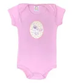
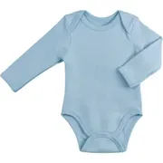
As calças de bebê fazem conjunto com o body, na maioria das vezes são compradas juntas, aqui vou separar apenas para poder falar de cada peça individualmente. Você pode encontrar as calças também pelos nomes de Mijão, Mijãozinho e Culote, mas todas são calças.
As calças podem vir com ou sem pézinho, semelhante aos macacões. Os modelos com pézinho parecem vantajosos, pois mantêm os pés do bebê aquecidos, mas seu uso é muito limitado, o bebê cresce e rapidamente limita o movimento das perninhas. Se você ganhar algumas ou se apaixonar por um modelo específico, tudo bem, mas a maioria das calças aconselho que sejam sem pézinho para garantir um uso prolongado.
Algumas calças possuem dobras nas extremidades dos pés que podem ser viradas para dentro, transformando-se em pequenos sapatinhos. Esse recurso é sim muito legal porque se adapta, quando estiver mais justa você apenas não poderá usar fazendo a dobra do sapatinho, mas pelo menos não perde a calça tão cedo.
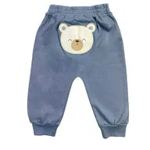
Os shorts também fazem conjunto com o body, geralmente tem opção de conjunto com calça ou shorts. Assim como o adulto, em épocas quentes do ano o bebê vai usar mais shorts do que calça. Na hora da compra é bom pensar qual tamanho o bebê vai usar de acordo com a época da estação do ano mais quente na sua cidade. A menos que você more em uma região que faz calor o ano todo.
Se ficar na dúvida, escolha 4 shorts de cada tamanho para não passar aperto, e deixe para comprar mais conforme a necessidade.
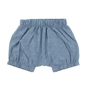
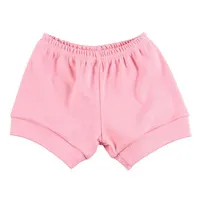
O casaco é uma peça que o bebê começará a usar mais a partir dos 3 meses. Embora seja usado com menos frequência, já que o bebê está quase sempre no colo e preferimos peças que cubram todo o corpinho, é bom ter pelo menos dois casaquinhos de cada tamanho a partir do P. Tenha pelo menos dois casaquinhos de cada tamanho a partir do P, garantindo que você tenha opções suficientes conforme o bebê cresce. Escolha casacos de malha para climas mais amenos e de plush para as estações mais frias. Mesmo sendo usados com menos frequência, os casacos são importantes para manter o bebê aquecido em passeios ou em ambientes mais frios. Certifique-se de ter alguns à mão para garantir o conforto do seu pequeno em qualquer situação.
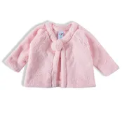
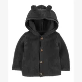
Escolha meias de algodão, pois elas são macias e respiráveis, enquanto as de material sintético geralmente não têm um bom toque e podem deixar o pezinho do bebê com chulé. Quando as meias chegarem na sua casa, vire-as do avesso e corte qualquer fio solto para garantir que não machuquem o pézinho delicado do bebê. Geralmente, as meias de cor lisa são as que menos têm fios soltos na parte de dentro, tornando-as uma opção ainda mais segura e confortável.
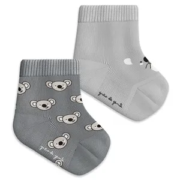
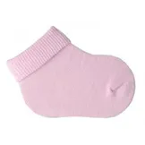
As luvas só serão realmente necessárias se o bebê nascer em uma estação do ano muito fria. Mesmo no inverno, dentro de casa, o clima geralmente está confortável, e é essencial para o desenvolvimento do bebê que ele tenha as mãos livres para sentir texturas, pegar objetos e até levar a mão à boca desde os primeiros dias de vida.
Se você decidir comprar luvas, preste atenção ao modelo. Muitas luvas disponíveis no mercado são pequenas e curtas, não ficando bem nas mãos do bebê, o que acaba sendo um investimento desperdiçado. Não é raro ver bebês com meias nas mãos durante o frio porque as luvas do enxoval não se mantêm no lugar.
Ao escolher as luvas, opte por modelos que sejam longos tanto na área da mão, permitindo que o bebê movimente as mãos livremente mesmo com as luvas, quanto no punho, para que fiquem bem fixadas. Prefira luvas de algodão, pois as de lã soltam muitas fibras que podem causar alergias na pele do bebê ou até ir a boca. Luvas de algodão são mais confortáveis e têm um toque mais macio.
Quando receber as luvas, vire-as do avesso e corte qualquer fiapo ou fio solto, pois isso pode machucar as mãos delicadas do bebê. No geral, as luvas de algodão são confortáveis e, como não têm divisões para os dedos, encaixam-se facilmente nas mãozinhas do bebê.
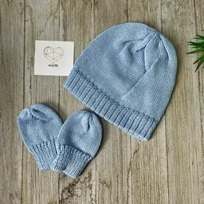
A touca, assim como as luvas, é um item pouco utilizado dentro de casa, sendo mais necessário durante as saídas. Na hora da escolha, opte por modelos mais compridos que possam se ajustar bem na cabecinha do bebê. Modelos muito curtos tendem a escorregar e não ficam no lugar. As toucas de malha são geralmente as que melhor se ajustam à cabeça do bebê, proporcionando conforto e proteção adequados.
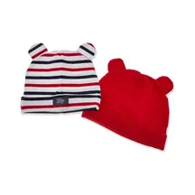
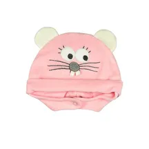
A menos que você tenha uma festa muito importante marcada nos primeiros 30 dias de vida do bebê, não aconselho comprar roupinhas de festa antes do nascimento. Mesmo que você já tenha uma festa agendada, é melhor esperar.
Os bebês crescem rápido e, embora haja uma média de tamanho, é difícil prever exatamente qual será o tamanho do seu bebê. É melhor comprar a roupinha próxima à data da festa para garantir que servirá e também para ajustar a escolha ao clima do momento. Assim, você evita desperdício e garante que o bebê esteja confortável e adequado para a ocasião.
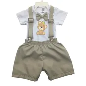
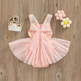
Minha curadoria de produtos, achadinhos, descontos e ofertas exclusivas diretamente no WhatsApp
Em um grupo fechado, restrito às postagens de ofertas
QUERO ENTRAR NO GRUPO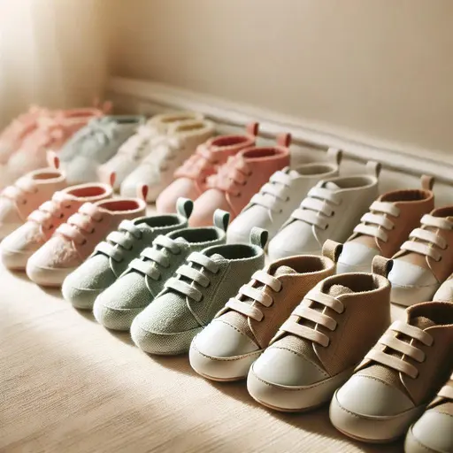
Embora os calçados para bebês sejam lindos e irresistíveis, não são uma compra prioritária para os primeiros meses de vida. De início, o bebê não usa muito calçado, pois passa a maior parte do tempo dormindo e ficando em casa, onde é mais confortável deixá-lo à vontade. Além disso, o crescimento dos bebês varia bastante, mesmo dentro da média, tornando difícil prever qual tamanho será adequado.
É melhor comprar um sapatinho específico para uma ocasião especial próximo à data, para garantir que ele servirá e será confortável no pezinho do bebê. Alguns bebês têm pés mais finos, enquanto outros têm pés mais gordinhos, então experimentar antes de comprar é ideal. No dia a dia, sapatinhos de meia são práticos e confortáveis, mantendo os pezinhos aquecidos sem restringir os movimentos.
Nos dias frios, pantufas são ótimas para manter os pés do bebê quentinhos. À medida que o bebê começa a engatinhar e dar os primeiros passos, meias antiderrapantes são essenciais para garantir segurança e evitar escorregões em superfícies lisas.
Se você não resistir e comprar alguns calçados antes do bebê nascer, não se culpe. Eles são realmente irresistíveis e podem adicionar um toque adorável ao enxoval. Apenas lembre-se de que o conforto e a praticidade são as prioridades nos primeiros meses de vida.
Esses sapatinhos o bebê só irá usar quando começar a andar de fato, mas já quero te preparar pois escolher o tamanho correto do sapato para o bebê pode ser um desafio, pois as tabelas de tamanho por idade nem sempre são precisas.
O ideal é medir o pé do bebê para garantir um ajuste perfeito. Lembre-se de que a palmilha do sapato não deve ser exatamente do tamanho do pé, deve sempre sobrar 0,5 cm acima dos dedinhos e 0,5 cm abaixo do calcanhar. Isso é importante porque o pé do bebê se movimenta enquanto ele anda, mudando de tamanho e também inchando durante o dia.
Além do comprimento, é importante considerar a estrutura do pé do bebê. Alguns bebês têm pezinhos mais finos, enquanto outros têm pezinhos mais largos. Ao escolher o sapato, observe se ele comporta o pezinho confortavelmente, sem apertar.
Coloque o pé do bebê sobre a palmilha do sapato para verificar o ajuste. Se o pezinho sobrar para fora da palmilha, escolha outro modelo que o encaixe bem.
Os sapatinhos de lã para bebês são uma excelente escolha para manter os pezinhos aquecidos e confortáveis durante o inverno. É importante optar por modelos que tenham elástico ou cordinha para ajustar ao pezinho, garantindo que fiquem bem fixos e não caiam facilmente.
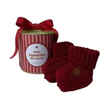
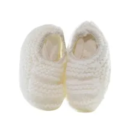
As pantufas para bebês são uma escolha perfeita para manter os pezinhos aquecidos e confortáveis durante o inverno. Macias e aconchegantes, elas proporcionam o calor necessário nos dias mais frios, além de oferecer um toque de diversão com seus modelos de bichinhos fofos que os bebês adoram. Com pantufas, você garante que seu bebê esteja protegido do frio, enquanto se diverte com os encantadores designs que tornam cada momento mais alegre.
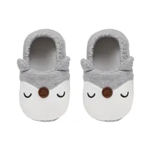
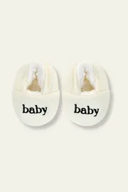
Os sapatos meia são uma ótima opção para bebês que já estão engatinhando ou andando, pois combinam conforto e praticidade. Feitos de tecido macio, eles se ajustam perfeitamente aos pezinhos delicados, proporcionando liberdade de movimento e evitando desconfortos. Além disso, possuem solado emborrachado, que protege os pés do frio do piso e oferece melhor aderência ao chão, prevenindo escorregões. Esses sapatos são ideais para manter o bebê aquecido e seguro enquanto explora o mundo ao seu redor.
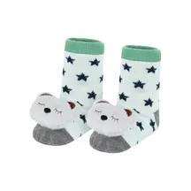
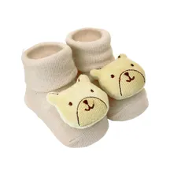
É ótima para quando o bebê começar a andar, ela fica bem fixa no pé, é extremamente confortável, tem solado antiderrapante, flexível, e dá a sensação de estar descalço.
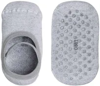
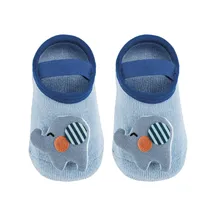
como vai ser quando
Você se prepara para o parto, monta o quartinho e escolhe cada detalhe do enxoval com tanto carinho… mas sabe como vai ser quando o bebê chegar?
O curso Manual do Recém-Nascido te mostra como se preparar e acolher seu recém-nascido desde o primeiro dia, te mostra como adaptar o bebê ao berço, como amamentar sem dor, e como fazer todos os cuidados com o bebê.
Para que você se sinta segura, tranquila e pronta para viver esse início com amor e confiança.
QUERO!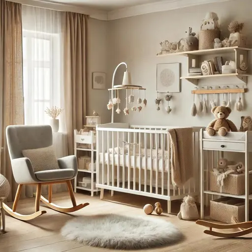
Preparar o quarto do bebê é uma das partes mais emocionantes e esperadas, esse espaço além de aconchegante precisa ser funcional e adaptável ao crescimento do bebê.
A primeira etapa para montar o quarto do bebê é medir o espaço disponível, saber exatamente as dimensões do quarto ajuda a planejar melhor a disposição dos móveis e evita surpresas desagradáveis, como um berço ou guarda-roupa que não cabem no local desejado. Use uma fita métrica para anotar as medidas das paredes e dos cantos do quarto, e tenha essas informações à mão quando for escolher os móveis.
Pense também em quanto tempo o bebê vai usar esse quarto e como suas necessidades vão mudar ao longo dos primeiros anos. Um quarto que é perfeito para um recém-nascido pode não ser tão funcional para uma criança de dois ou três anos, móveis como guarda-roupas, por exemplo, devem ser escolhidos com essa perspectiva em mente. Guarda-roupas muito pequenos podem acomodar perfeitamente as roupinhas de bebê, mas rapidamente se torna insuficiente conforme a criança cresce e precisa de mais espaço.
É bom pensar no quarto para o bebê, não focando apenas o primeiro ano de vida dele, mas para ser um espaço gostoso para ser usado e fácil de adaptar para toda a fase da primeira infância.
Sei que você pode ter sonhado com um berço bem fofinho e acolchoado cheio de pelúcias, almofadas e mantinhas quentinhas, mas precisamos falar sobre uma informação importante: as normas de berço seguro.
Nos primeiros meses de vida os bebês ainda não têm a capacidade de se virar sozinho ou de se livrar de algo que cubra seu rosto, eles podem se mexer de maneira inconsciente, puxar algo para o rosto ou se colocar embaixo de algo sem querer, e não sabem como se livrar dessas situações e podem se asfixiar desta forma acidentalmente.
Por isso é crucial manter o berço livre de qualquer objeto solto, que o bebê possa puxar e trazer para o rosto. Isso inclui travesseiros, cobertores, bichos de pelúcia, brinquedos, inclusive protetores de berço. Qualquer um desses itens pode, sem querer, ser puxado ou movido para o rosto do bebê, representando um grande perigo.
Por isso, mantenha o espaço do berço minimalista e seguro, assegurando que o seu pequeno tenha um ambiente de sono protegido e livre de riscos, é essencial que no berço haja apenas o colchão e um lençol bem preso, para garantir um sono de qualidade e seguro.
Existem três tipos de berço: mini berço, berço convencional e berço desmontável.
O mini berço é excelente para acoplar na cama dos pais, sendo muito utilizado nos primeiros meses de vida. Sua praticidade permite que a mãe pegue o bebê com facilidade para amamentar, mantendo-o próximo mas em seu próprio espaço. Isso facilita posteriormente a transição para o quarto do bebê, por já estar acostumado com seu espaço. Além de proporcionar segurança para o bebê e conforto para os pais, que podem dormir tranquilos sem receio de machucar o bebê.
Embora seja um produto que adoro, é importante considerar que o bebê usará o mini berço por no máximo quatro meses, pois logo se tornará pequeno. Na minha opinião vale a pena mesmo sendo usado por alguns meses, visto a importância dessa fase, a demanda e as necessidades do bebê. Porém você pode usar um moisés ou o próprio carrinho que vamos falar no capítulo Transporte, apesar de não encaixar na cama igual ao Mini berço, pode ser uma boa opção também.
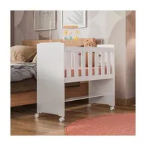
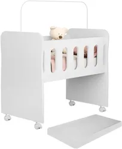
O berço tradicional é aquele que fica no quarto do bebê, e existem diversas opções e modelos disponíveis. Alguns berços começam como mini berços e evoluem para berços convencionais, podendo até se transformar em mini camas. Essa é uma opção interessante e um bom investimento já que pode ser usado desde o nascimento até o bebê ter cerca de quatro anos. Mas mesmo os berços tradicionais que não se transformam são ótimos e cumprem bem seu papel, avalie qual opção é mais interessante para a sua casa e seu orçamento.
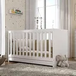
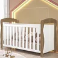
Esse não é o meu favorito, o berço desmontável pode parecer atraente devido à sua praticidade e portabilidade, mas na prática ele apresenta algumas desvantagens se for comprado para usar no dia a dia. Ele tende a ser muito flexível e o colchonete geralmente é fino e desconfortável, servindo mais como um "quebra-galho". A promessa de se transformar em chiqueirinho também não é muito funcional, pois à medida que cresce o bebê geralmente não fica fechado por muito tempo, preferindo explorar o ambiente. O berço desmontável é uma boa opção para viagens, caso você perceba essa necessidade, mas em casa é melhor optar por um berço tradicional.
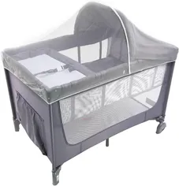
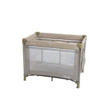
O colchão do bebê deve ser firme, ao contrário do que muitos imaginam inicialmente, a firmeza é essencial para garantir tanto o conforto quanto a segurança do bebê.
Ao escolher o colchão, se ele não vier incluso com o berço, preste atenção nas medidas. Nem todos os berços são iguais, mesmo os tradicionais, eles podem ter diferentes padrões, como o padrão americano que é maior, ou o padrão nacional que é mais estreito. Certifique-se de que o colchão se encaixe perfeitamente no berço escolhido antes da compra.
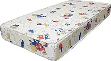
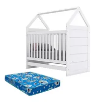
Você pode ter mais, mas três lençóis são o mínimo necessário: um em uso, um lavando e um de reserva para emergências, como vazamentos de fralda ou regurgitação do bebê. Os lençóis precisam ser de algodão e de elástico para ficar bem firmes no berço.
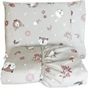
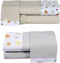
O ninho ajuda muito a dar a sensação de acolhimento ao bebê no berço. Como o bebê deita em cima, não há risco de trazer para o rosto, mas deve ser usado apenas até o bebê completar três meses, pois depois disso, o bebê começa a rolar e o item se torna menos seguro e menos benéfico.
Embora possa parecer que três meses de uso não justifiquem a necessidade do ninho, ele pode fazer uma grande diferença na adaptação do bebê ao berço. Três meses de sono de qualidade para o bebê e para você é extremamente vantajoso. Eu realmente indico o uso para as minhas alunas do curso de sono, porque ajuda o bebê a relaxar e dormir melhor por se sentir acolhido e seguro.
Ao escolher um ninho, prefira um de tecido de algodão e que tenha ajuste de tamanho, eu gosto dos modelos que são de fita que você puxa e ele vai franzindo para ficar menor, depois é só ir soltando para ele ficar maior. O ninho precisa envolver o corpinho do bebê, deixando espaço em volta da cabeça para ser seguro e proporcionar a sensação de conforto e proteção. Apesar de ser usado apenas por três meses, o bebê cresce rapidamente, então é importante que o ninho seja ajustável para acompanhar esse crescimento.
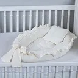
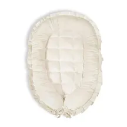
É interessante ter um protetor impermeável no colchão para ajudar a preservá-lo, vazamentos de leite e fraldas são inevitáveis durante o uso, e com o tempo, isso pode sujar e manchar o colchão, tornando-o difícil de limpar efetivamente.
Embora alguns colchões tenham um lado de plástico, esse material geralmente faz barulho que pode acordar o bebê e não protege as bordas laterais do colchão. A capa além de ser lavável na máquina, ela tem um toque mais macio, deixando o colchão mais confortável para o bebê.
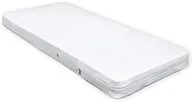
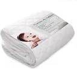
O aparelho de ruído branco ajuda o bebê a adormecer e manter um sono tranquilo por mais tempo. Ele emite sons suaves que imitam o ambiente do útero, proporcionando um ambiente calmante para o bebê. No mercado, existem vários modelos excelentes, alguns dos quais vêm combinados com luminárias e oferecem diversas opções de sons, como batimentos cardíacos, sons da natureza e melodias suaves.
Alguns aparelhos possuem temporizadores, controle de volume e luzes noturnas integradas, tornando-os multifuncionais e ainda mais úteis no dia a dia.
Quando se trata de mobiliar o quarto do bebê, a escolha entre uma cômoda ou um guarda-roupas pode ser desafiadora, especialmente se o espaço for limitado. Cada peça tem seus pontos positivos, e é importante considerar o que melhor atende às suas necessidades e ao espaço disponível.
Cômoda: A cômoda é uma excelente escolha para o quarto do bebê por várias razões. Suas gavetas facilitam a organização das roupas do bebê, que são pequenas e podem ser facilmente separadas por tipo e tamanho. Além disso, a parte superior da cômoda pode ser utilizada como trocador, oferecendo uma solução prática e economizando espaço.
Algumas cômodas vêm com um pequeno espaço para cabides, o que ajuda a pendurar roupinhas especiais, como vestidos ou casacos. Se você optar apenas por uma cômoda, escolher uma com essa funcionalidade adicional pode ser extremamente útil.
Guarda-Roupas: O guarda-roupas é ideal se você está pensando no longo prazo. Ao escolher um guarda-roupas, evite modelos que sejam pensados apenas para roupas de bebê, pois logo seu filho vai crescer e você precisará de mais espaço para guardar roupas maiores.
Opte por um guarda-roupas com bom espaço e várias gavetas. Isso permitirá uma organização mais eficiente e acomoda peças maiores à medida que seu bebê cresce.
Se você escolher um guarda-roupas e precisar de um espaço para o trocador, considere colocá-lo na área do cabideiro ou use um suporte para trocador em cima do berço.
Combinação de Ambos: Se você tem espaço para ambos, essa é a melhor solução. A cômoda oferece fácil acesso e organização para roupas pequenas e itens do dia a dia, enquanto o guarda-roupas pode ser usado para peças maiores e outros itens que você precisará à medida que o bebê cresce.
Opções Multifuncionais: Existem também opções de berços que vêm com uma cômoda embutida. Embora sejam menores, essas cômodas integradas oferecem gavetas adicionais e podem ser uma excelente solução para economizar espaço, proporcionando ainda assim um local para organizar as roupas do bebê.
Em resumo, tanto a cômoda quanto o guarda-roupas têm suas vantagens. A escolha dependerá do espaço disponível e das suas necessidades específicas.
Embora as roupinhas de bebê sejam pequenas, os bebês crescem rapidamente e logo precisarão de mais espaço para suas roupas maiores. Por isso, é importante escolher um guarda-roupas que não apenas atenda às necessidades imediatas, mas que também seja funcional à medida que o seu filho cresce.
O guarda-roupas oferece bastante espaço para armazenar roupas, brinquedos e outros itens essenciais. Isso é especialmente útil à medida que o bebê cresce e suas necessidades aumentam.
Prefira modelos que ofereçam uma boa quantidade de gavetas e prateleiras. Isso facilita a organização e o acesso aos itens do dia a dia. Um cabideiro é essencial para pendurar roupas que amassam facilmente, como vestidos e casacos.
Escolha um design que se adapte ao crescimento do seu filho e que possa ser facilmente integrado à decoração do quarto à medida que ela muda. Invista em um guarda-roupas de boa qualidade que possa durar por muitos anos. Materiais resistentes e acabamentos duráveis são fundamentais.
Minha curadoria de produtos, achadinhos, descontos e ofertas exclusivas diretamente no WhatsApp
Em um grupo fechado, restrito às postagens de ofertas
QUERO ENTRAR NO GRUPOA cômoda é excelente para organizar as roupinhas do bebê nos primeiros meses, especialmente por serem tão pequenas. Além de manter tudo em ordem, a cômoda oferece uma altura ideal para acomodar o trocador, proporcionando um local apropriado para as trocas. Isso facilita a higienização e, crucialmente, ajuda a evitar dores nas costas dos pais. Ter uma cômoda bem organizada e na altura certa torna o dia a dia mais prático e confortável para todos.
O trocador é um local confortável e seguro para as trocas de fraldas e roupas. Ele facilita a rotina dos pais, oferecendo uma superfície acolchoada onde o bebê pode ser acomodado durante esses cuidados. Além de tornar as trocas mais práticas, o trocador também ajuda a manter a organização do espaço, evitando sujeiras e bagunças.
Pode não parecer essencial, já que você poderia usar a lixeira do banheiro ou de outra parte da casa, mas recomendo fortemente que tenha uma lixeira específica para as fraldas do bebê, próximo ao trocador.
Mesmo que as fraldas sejam pequenas no início, você precisará trocar de seis a oito por dia. Por mais que você esvazie a lixeira e troque o saco de lixo diariamente, é importante que a lixeira tenha um tamanho adequado para acomodar essas fraldinhas.
Escolha uma lixeira que abra fácil a tampa e que, ao fechar, vede bem para não vazar odores. O ideal é optar por lixeiras com mecanismo de pedal, que permitem abrir a tampa com o pé, ou com sensor tornando o uso mais prático e higiênico no dia a dia.
Existe uma lixeira que foi desenvolvida especialmente para fraldas, ela veda bem o cheiro, porém tem um valor de investimento elevado. Uma lixeira tradicional, que não tenha espaço aberto na tampa vai resolver bem também.
Este ítem é o meu preferido, a bolsa anti-cólica é usada para proporcionar alívio natural das cólicas e desconfortos abdominais comuns nos primeiros meses de vida do bebê. Mas ajuda também a dar um aconchego na barriguinha do bebê e ajuda a relaxar para entrar no sono, quando é recém-nascido.
Existem diversos modelos de bolsas anti-cólicas, elas podem ser feitas de gel, de água ou de sementes. A que eu mais gosto são as bolsas de sementes, elas podem ser aquecidas no micro-ondas e aplicadas na área abdominal do bebê para aliviar as cólicas com calor suave.
Essas bolsas são geralmente feitas de tecidos naturais como algodão e preenchidas com sementes, grãos ou ervas aromáticas como lavanda e camomila, que além de aquecer, também oferecem benefícios calmantes através da aromaterapia.
Cueiro é um tecido grande de algodão, um pouco mais grosso do que uma fralda de pano. Antigamente, os cueiros eram usados para enrolar o bebê como um charutinho, para ele ficar acolhidinho igual quando estava no útero. Essa é uma das primeiras coisas que a enfermeira faz com o bebê logo após o nascimento.
Embora pareça estranho para nós, adultos, que não gostamos de nos sentir "presos", os bebês adoram essa sensação nos primeiros dias de vida.
Hoje, o uso tradicional dos cueiros para fazer charutinho foi substituído por swaddles ou sacos de dormir, que são mais seguros para usar no berço, pois não há risco de se soltarem e cobrirem o rosto do bebê.
Por isso não é para fazer charutinho que esse item está aqui, hoje os cueiros são usados principalmente como proteção para cobrir o bebê com um tecido leve; colocar no colo de quem vai segurar o bebê para evitar contato direto com a roupa ou pele do adulto; ou forrar o carrinho ou bebê conforto para proteger a pele delicada do bebê do tecido mais áspero.
Em resumo, o cueiro é um tecido multiuso. Você pode comprar mais se desejar, mas geralmente três são suficientes.
Este item é muito importante, especialmente se você mora em uma cidade fria ou se o seu bebê nascerá no inverno. Como não é recomendado o uso de cobertores no berço sem supervisão, os saquinhos de dormir se tornam extremamente necessários.
Existem modelos de sacos de dormir que o bebê não pode usar sem supervisão, por deixarem o bebê solto, com o risco de escorregar para dentro, podendo causar sufocamento ou superaquecimento.
Por isso escolha os saquinhos de vestir, há de várias opções de tecidos, dos mais fresquinhos aos mais quentinhos, de acordo com o clima da cidade e a estação do ano que será usado.
Não estranhe que as opções RN de algumas marcas tenham abinhas, elas abraçam os bracinhos para dar a sensação de limite e segurança ao bebê. Este modelo de saco de dormir pode ser chamado de Swaddle. As abinhas inibem o reflexo de moro, que é como um susto que o bebê leva por não encontrar limite físico como as paredes do útero, ele tem a sensação que está caindo e isso o acorda muitas vezes. Quando não for mais necessário usar essas abinhas você não irá perder a peça, apenas irá posicioná-las abaixo dos bracinhos para deixá-los livres.
Embora não deva usar cobertores no berço, é importante ter pelo menos três mantas ou cobertores de diferentes espessuras para cobrir o bebê enquanto estiver no colo ou mesmo deitado sob sua supervisão. É um item essencial para o enxoval do bebê, especialmente nos dias mais frios, proporcionando aconchego e ajudando a manter o bebê aquecido e confortável.
As mantas são feitas de materiais mais leves em comparação aos cobertores, que geralmente são mais espessos e quentes.Então se você morar em uma cidade muito quente, não vale a pena investir em cobertores muito espessos porque não será útil para você. Mas, se você mora em uma cidade fria, como eu, vale a pena comprar cobertores de materiais diferentes para usar conforme a necessidade.
As mantas e cobertores de bebês são pequenos, então não vale a pena comprar muitos. No início, é interessante que eles sejam pequenos, mas, perto de um ano, você sentirá falta de cobertas maiores. Por isso, não compre muitos agora.
Eu coloquei 03 como uma quantidade mínima, recomendo escolher pelo menos uma manta de algodão leve para os dias mais quentes e um de fleece ou soft para os dias frios, e então uma ou mais de diferentes espessuras para compor o enxoval. Sempre que possível, opte por peças antialérgicas para maior conforto e usabilidade.
É um móvel para o quarto mas na verdade é um presente para você, já que usará muito nos primeiros meses, te ajudando a manter uma postura correta e reduzindo o cansaço durante a amamentação.
Na hora de escolher a sua poltrona de amamentação, é preciso se atentar a alguns detalhes: Certifique-se de que a poltrona oferece bom apoio para as costas, braços e cabeça, se você for uma mulher alta vai precisar que o apoio das costas seja alto também para apoiar a sua cabeça. Algumas poltronas têm a função reclinável, permitindo ajustar a inclinação para encontrar a posição mais confortável, se puder investir em um modelo assim, é muito bom. Prefira estofamento macio, mas firme, que ofereça suporte sem afundar demais. Espuma de alta densidade é uma boa escolha. O revestimento deve ser fácil de limpar, pois é comum ocorrerem derramamentos de leite ou regurgitação do bebê. Verifique as dimensões da poltrona para garantir que ela caiba no espaço disponível no quarto do bebê. Poltronas muito grandes podem ocupar espaço valioso. E certifique-se de que há espaço suficiente ao redor da poltrona para se mover e ajustar confortavelmente. Não subestime o banquinho para os pés, ele dá apoio e ainda ajuda a melhorar a circulação e seu conforto durante a amamentação.
Embora não sejam indispensáveis, porta-trecos e organizadores de gavetas são extremamente úteis para manter a organização e a praticidade no dia a dia, especialmente quando se trata das roupinhas tão pequenininhas do bebê. Eles são classificados por tamanho, não compre o menor porque usará por muito pouco tempo. O ideal é comprar nos tamanhos P e M
Ter um cesto de roupa suja separado para o bebê é uma ótima ideia para facilitar a organização e a rotina diária. Isso permite que você lave as roupas do bebê de forma mais prática e eficiente, além de ajudar a manter o quarto sempre organizado. Com um cesto exclusivo, você pode separar rapidamente as roupas sujas, garantindo que o ambiente do bebê permaneça limpo e arrumado, tornando o cuidado diário muito mais fácil e ágil.
A maior vantagem dos sacos de vácuo é que podem ser utilizados para guardar peças de roupa do dia a dia, mas também para a arrumação de itens mais volumosos como edredões, almofadas, lençóis e almofadas. Como no primeiro ano o bebê muda de tamanho de roupas muitas vezes, o saco à vacuo ajuda na organização, assim você separa por tamanho, e guarda o que não está usado no momento.
São ótimos para organizar os kits de trocas de roupas dentro da mala da maternidade, você pode separar o look completo com fralda e meia por dia. Eles geralmente são vendidos em kits com 4 a 6 unidades, o que é o ideal para usar um por dia na maternidade que geralmente são no máximo 03 aqui no brasil, e um fica para a saída maternidade. Se tiver mais, você pode usar para levar roupinhas extras ou demais pertences do bebê.
A tela de proteção para berço é uma opção segura para impedir que o bebê prenda as mãozinhas ou pézinhos entre as grades do berço. A maioria delas são adaptáveis para o tamanho de berço padrão e americano, mas é importante observar essa informação na hora de comprar.
Na hora de escolher a decoração do quarto do bebê, é legal pensar além da fase de recém-nascido. Como é um grande investimento, vale a pena considerar uma decoração que seu filho vá gostar e que seja fácil de adaptar para a primeira infância. Assim, você cria um ambiente aconchegante, confortável e prático para todas as etapas do crescimento.
Nichos e prateleiras são ótimos para organização e decoração. Eles ajudam a manter o quarto arrumado com itens decorativos, livros e brinquedos. Adesivos ou papéis de parede são excelentes para compor a decoração, deixando o quarto mais infantil e criativo.
O tapete é um item simples e essencial para deixar o ambiente mais agradável e aconchegante. Escolha um modelo fácil de limpar e com base antiderrapante para evitar escorregões, proporcionando um ambiente seguro e confortável.
O abajur é uma peça funcional e decorativa que traz um toque acolhedor ao quarto. Ele é essencial durante as trocas noturnas e as mamadas, criando um ambiente calmo e tranquilo. Opte por modelos com luz suave, que ajudam a criar um ambiente propício para o sono do bebê. Você pode colocar uma lâmpada de baixa potência ou de cor vermelha que ilumina o ambiente mas atrapalha menos o sono do bebê.
Abajures com design infantil podem se tornar um elemento de destaque na decoração, e muitos tem como você escolher a cor e a intensidade da luz.
Os cabides serão usados para pendurar bodies, macacões, vestidinhos e casacos, mantendo tudo arrumado e sem amassar. Além de facilitar a visualização das peças, eles ajudam a otimizar o espaço do guarda-roupa, tornando o dia a dia mais prático e organizado.
O recomendável para as trocas de fralda é usar água morna e algodão para limpar o bebê, pelo menos quando estiver em casa. Isso ajuda a evitar a irritação na pele sensível do bebê que pode ser causada pelo uso frequente de lenços umedecidos. Para tornar as trocas mais práticas e organizadas, é útil ter um kit de higiene ao lado do trocador.
No kit de higiene, inclua álcool 70% para higienizar as mãos, uma garrafa térmica com água morna, pomada anti assaduras, algodão, cotonetes e qualquer outro item que você considere necessário.
O travesseiro anti refluxo não é exatamente um travesseiro, é uma superfície firme feita para dar inclinação ao bebê, até o terceiro mês de vida é comum que os bebês tenham refluxo fisiológico. Isso ocorre porque a válvula entre o estômago e o esôfago ainda não está completamente formada, permitindo que o líquido do estômago volte e cause desconforto.
O travesseiro anti-refluxo proporciona a inclinação necessária para evitar que o leite volte, ajudando a aliviar esses sintomas. Porém eles devem ser usados sob supervisão, por serem estreitos o bebê pode acabar escorregando para fora durante o sono.
Outra opção é colocar algo abaixo do colchão do berço para dar essa inclinação, caso sinta necessidade. Desta forma o travesseiro anti refluxo não se faz um item indispensável.
Travesseiros, sejam anti-sufocantes ou não, não são recomendados para bebês até completarem um ano de idade. Por questão de segurança, e por não trazer conforto ao bebê. A proporção entre corpo, pescoço e tronco do bebê é diferente da nossa. Por isso, eles não precisam de travesseiro até atingirem 12 meses, e também por não serem capazes de retirar algo do rosto, podendo causar asfixia.
Outro item que achamos lindo é o kit berço, com almofadas coloridas e acolchoadas, que parece tornar o berço mais aconchegante para o bebê. No entanto, ele é desnecessário e é contraindicado, pois o berço precisa ser seguro e não deve ter nada que o bebê possa puxar para o rosto ou se enroscar acidentalmente.
O kit berço serve apenas para enfeitar, mas não é mais recomendado justamente por não garantir a segurança do bebê. Nos primeiros meses de vida, o berço deve conter apenas o bebê, o lençol e o colchão, sem nenhum outro item que possa ser puxado para o rosto, ou o bebê consiga enfiar o rostinho.
No nosso imaginário, um berço com mosquiteiro parece lindo e protetor, mas esse item não é muito recomendado. Na maioria dos casos, não há necessidade de proteger o berço do bebê contra mosquitos ou pernilongos, e o mosquiteiro pode acumular pó e pode sem querer invadir a área do bebê.
O uso do mosquiteiro só é realmente necessário em cidades onde há muitos mosquitos ou pernilongos dentro de casa. Nesses casos, é importante usá-lo corretamente, lavando-o uma vez por semana e garantindo que ele não invada o espaço do bebê. No entanto, se na sua cidade não costuma haver mosquitos ou pernilongos dentro de casa, o mosquiteiro se torna totalmente desnecessário.
como vai ser quando
Você se prepara para o parto, monta o quartinho e escolhe cada detalhe do enxoval com tanto carinho… mas sabe como vai ser quando o bebê chegar?
O curso Manual do Recém-Nascido te mostra como se preparar e acolher seu recém-nascido desde o primeiro dia, te mostra como adaptar o bebê ao berço, como amamentar sem dor, e como fazer todos os cuidados com o bebê.
Para que você se sinta segura, tranquila e pronta para viver esse início com amor e confiança.
QUERO!Tão importante quanto escolher as roupinhas e preparar o quartinho do bebê, é pensar no conforto e segurança do seu pequeno e também dos pais na hora de sair, seja em viagens longas ou pequenas saídas do dia a dia. Cada passeio é uma oportunidade de criar memórias especiais, e garantir que tudo esteja bem organizado e seguro é fundamental para aproveitar esses momentos ao máximo.
O transporte do seu bebê requer cuidados especiais e, por isso, escolher os itens certos faz toda a diferença. Desde o carrinho de bebê que proporciona conforto durante os passeios, até o bebê conforto que garante segurança no carro, cada detalhe é pensado para oferecer praticidade e tranquilidade. As bolsas e mochilas também desempenham um papel crucial, ajudando a organizar todos os itens essenciais para que nada falte quando estiverem fora de casa.
Neste capítulo, vamos explorar como cada um desses itens pode contribuir para uma experiência mais segura e agradável, não apenas para o bebê, mas também para os pais. Afinal, um passeio tranquilo e bem planejado torna-se uma fonte de alegria e conexão.
Quando temos um bebê, até mesmo uma saída simples ao médico requer uma preparação de mala comparável a uma viagem de três dias. É necessário levar fraldas, lenço umedecido, roupa extra, leite se o bebê usa mamadeira, frutinhas e refeições se ele já começou a introdução alimentar.. Em resumo, você precisa levar tudo que o bebê possa precisar, pois aquilo que você esquecer será justamente o que fará falta nesse dia.
Portanto, ter uma bolsa para carregar as coisas do dia a dia do bebê se torna muito importante. Na maioria das vezes, essa bolsa do bebê acaba se tornando a bolsa oficial da mãe, onde ela escolhe um cantinho para a carteira e as chaves, substituindo a bolsa de mulher.
Ao escolher essa bolsa, procure uma que seja prática e que você goste de usar. Há muitos modelos com estampas e texturas variadas, desde as mais infantis até as mais neutras. Escolha uma que você se sinta bem carregando, pois provavelmente será a sua bolsa oficial pelo menos durante o primeiro ano de vida do bebê. Existem muitos modelos, com diferentes formas de carregar, desde as bolsas de ombro até as que são como mochilas. Além do estilo, escolha uma que seja resistente e de material fácil de limpar.
Eu particularmente gosto muito dos modelos de mochila, pois quando a mãe sai sozinha com o bebê, ela consegue carregá-la facilmente. No entanto, todas as opções são interessantes e práticas, e muitas delas vêm com itens adicionais que facilitam o dia a dia, como um trocador portátil.
O carrinho de bebê é um item que facilita muito a vida dos pais, seja dentro ou fora de casa, para passear ou simplesmente ajudar em uma soneca.
Ao escolher o seu carrinho, preste atenção às medidas dele quando estiver desmontado, para garantir que caiba facilmente no seu carro. Alguns carrinhos podem parecer incríveis e confortáveis, mas ao serem desmontados, ficam grandes e volumosos, podendo não caber no porta-malas de alguns carros ou ocupando todo o espaço.
O modelo de carrinho que eu mais gosto e acredito que você usará por mais tempo é o que fecha no modelo guarda-chuva. Esse modelo é extremamente leve, fácil de usar e pode ser guardado tanto no porta-malas quanto no chão do carro, atrás do motorista. Isso facilita muito quando a mãe sai sozinha com o bebê de carro.
O bebê conforto é a forma confortável e segura para transportar o bebê dentro do carro. Existem alguns modelos de carrinhos que já vem com o encaixe para o bebê conforto. Estes modelos são muito interessantes por trazer muita praticidade aos pais.
Alguns modelos de bebê conforto possuem base adicional para deixar fixa no carro e encaixar o bebê conforto direto nela.
O bebê conforto pode ser usado até 01 ano de idade, ou até o bebê atingir o peso de 13 kg.
O bebê conforto será usado até os 12 meses de vida do bebê para transportá-lo no carro. Ele possui ajuste de altura do cinto em dois ou três níveis para se adaptar ao crescimento do bebê durante esse período. No entanto, quando o bebê é recém-nascido, ele é muito pequeno e frágil, ainda não sustenta a cabeça, parecendo ficar solto e desconfortável no bebê conforto.
Para resolver isso, existem os redutores de bebê conforto, que são como almofadinhas que dão sustentação à cabeça do bebê, evitando que ela fique balançando de um lado para o outro. Eles também diminuem o espaço do encosto, tornando o ambiente mais aconchegante e seguro para o bebê.
Esse item é bastante útil e você provavelmente vai gostar de usá-lo. Ao escolher um redutor, prefira um que possa ser lavado na máquina e que seja feito de tecido de algodão, para garantir um toque confortável e hipoalergênico para o bebê. O redutor de bebê conforto é uma adição valiosa ao enxoval, proporcionando tranquilidade e segurança nos passeios e viagens com seu pequeno.
A babá eletrônica é um item muito útil quando temos um bebê em casa, por mais que estejamos sempre por perto, gostamos de estar sempre de olho para saber que está tudo bem.
A babá eletrônica proporciona muita segurança e tranquilidade para os pais, permitindo que monitore o bebê em tempo real. Modelos mais avançados oferecem recursos adicionais, como visão noturna, sensores de temperatura e até comunicação bidirecional, para que você possa falar com o bebê sem precisar ir até o quarto.
Ao escolher uma babá eletrônica, considere as suas necessidades e o layout da sua casa. Modelos com maior alcance são ideais para casas grandes, enquanto aqueles com conectividade Wi-Fi podem ser monitorados através do seu smartphone, oferecendo ainda mais conveniência.
O canguru e o sling são peças usadas para carregar o bebê e são extremamente úteis, proporcionando grande ajuda para os pais. No entanto, aconselho que você compre esses itens apenas quando sentir a necessidade de uso, e se possível, experimente na loja, mesmo que planeje comprar online posteriormente.
Esses acessórios são muito práticos, mas há uma preferência pessoal sobre como carregar o bebê, e existe uma infinidade de modelos diferentes, tanto para canguru quanto para sling. Experimentar com o bebê permite que você encontre a opção que oferece o melhor conforto e segurança para vocês.
Tanto o canguru quanto o sling distribuem o peso do bebê de forma equilibrada, reduzindo a tensão nas costas e nos ombros dos pais. Se bem ajustado, permitem que os pais tenham as mãos livres enquanto carregam o bebê, facilitando a realização de outras tarefas.
Ao escolher um canguru ou sling, opte por modelos que sejam ajustáveis e feitos de materiais confortáveis e seguros. Certifique-se de que o bebê tenha suporte para a cabeça e pescoço, especialmente nos primeiros meses, e também esteja em uma posição ergonômica, com as pernas em forma de "M" e o quadril apoiado.
O lençol para carrinho e bebê conforto não é imprescindível, mas é bastante útil. Não é necessário comprar um lençol específico, embora isso seja ideal porque ele se encaixa perfeitamente.
No entanto, você pode usar um sub lençol de berço, uma fralda de pano grande ou até um cueiro para proteger a pele do bebê do tecido do carrinho ou do bebê conforto. O tecido deles precisa ser forte e resistente, semelhante ao tecido de um colchão, e por isso é mais áspero.
O contato direto com esse tecido pode não ser confortável para o bebê. Usar um tecido de algodão entre o bebê e o carrinho ou o bebê conforto proporciona um toque mais macio e agradável para o bebê.
O moisés para bebê é um item semelhante a uma cestinha, mini berço ou berço portátil, muito utilizado para que o bebê possa tirar um cochilo durante os passeios ou dentro de casa, acompanhando a mãe no cômodo onde ela estiver. Por ser um acessório portátil, o moisés permite que o bebê durma em diversos locais além do berço, proporcionando flexibilidade e praticidade.
Os modelos tradicionais têm o cesto confeccionado em vime, mas existem opções modernas que vêm com base, balanço ou rodinhas. Alguns modelos podem até ser acoplados ao carrinho de bebê. Além disso, o moisés geralmente possui alças que facilitam o transporte pelos pais, tornando-o uma escolha versátil e conveniente para o enxoval do bebê.
Não é algo necessário, se você tiver o mini berço acredito que não usará, a menos que o use ao lado da sua cama
Pode parecer estranho ter uma secadora na lista de enxoval do bebê, mas se você mora em uma cidade fria ou com invernos rigorosos, esse item é indispensável. Bebês sujam suas roupinhas com muita frequência, e é comum se deparar com todas as roupinhas sujas ou ainda secando. Uma secadora, mesmo que seja a mais simples, como aquelas de parede, pode ser uma verdadeira salvadora nesses momentos. Em apenas uma ou duas horas, a secadora seca todas as roupinhas do bebê, garantindo que você tenha sempre opções limpas e prontas para usar.
O trocador de bolsa é um item essencial para facilitar a troca de fraldas quando você está fora de casa. Ele deve ser dobrável e feito de um material de fácil limpeza. Antes de comprar um, verifique se sua bolsa de maternidade já inclui um trocador, pois muitas vêm com esse acessório.
Esse item será muito usado no início, pois protege tanto o bebê quanto o local onde você está trocando a fralda, caso haja vazamentos. No entanto, não é necessário fazer um alto investimento em um trocador de bolsa. Desde que ele seja impermeável e fácil de guardar na bolsa, ele cumprirá bem sua função.
As cadeirinhas para carro costumam ser adaptáveis à várias idades do bebê. Alguns dos modelos podem ser usados desde recém-nascidos até 24kg ou 36kg, mas a maioria é usada a partir de um ano de vida do bebê.
Algumas possuem a rotação 360º que permite girar a cadeira em sua base, facilitando na hora de retirar o bebê do carro. Além disso, o sistema de isofix também está disponível para vários modelos, que é mais um ponto de fixação no carro além do cinto de segurança.
Apesar de existirem cadeiras que podem ser usadas por recém-nascidos eu aconselho priorizar o bebê conforto durante os primeiros meses, por ser mais prático, leve e se encaixar no carrinho. Muitas vezes os bebês dormem durante o passeio, então deixar no bebê conforto se torna muito prático pois não precisamos mexer no bebê para mudá-lo de lugar durante o sono.
Neste capítulo, vamos explorar os utensílios importantes para auxiliar na amamentação, estocagem de leite, e na oferta de fórmula, se for necessário, sem esquecer da tão esperada introdução alimentar.
Começaremos com os itens que facilitam a amamentação, como almofadas de amamentação, bombas tira-leite e recipientes para estocagem de leite materno. Estes utensílios são fundamentais para garantir que a amamentação seja confortável e eficaz, tanto para a mãe quanto para o bebê. Se a oferta de fórmula for necessária, abordarei os acessórios que podem tornar essa experiência mais tranquila e segura.
Quando se trata da introdução alimentar, é importante lembrar que não é preciso comprar de imediato. A introdução alimentar geralmente começa aos seis meses de idade, quando o bebê mostra sinais de prontidão, como conseguir sentar-se com apoio, demonstrar interesse pela comida e ter um bom controle da cabeça e do pescoço. Esses sinais indicam que o bebê está pronto para começar a explorar novos sabores e texturas.
Meu objetivo é equipá-la com todas as informações e ferramentas necessárias para cada etapa da alimentação do seu bebê, garantindo uma jornada alimentar saudável, segura e repleta de momentos especiais.
A almofada de amamentação é como a extensão do braço da mãe, serve para apoiar o bebê na altura adequada para mamar, reduzindo a necessidade da mãe se inclinar ou se esforçar para manter uma posição confortável para o bebê.
Como é uma atividade feita muitas vezes ao dia e por longos períodos, inicialmente é imprescindível que a mãe esteja bem acomodada e confortável neste momento. Isso ajuda a evitar dores nos braços, costas, ombros e pescoço, proporcionando um ambiente mais relaxado para a amamentação. Além disso, a almofada pode ser usada para apoiar o bebê enquanto ele descansa ou será um apoio muito interessante para o bebê fazer tummy time, para sentar com apoio, e brincar ao longo do primeiro ano.
A almofada de amamentação é uma peça que pensamos já no início, porém não é qualquer uma que serve, há uma variedade enorme, e você precisa estar atenta para escolher a que será boa para você, a que realmente vai te ajudar na amamentação.
Escolha uma que tenha capa removível, assim você pode colocar para lavar sempre que precisar. Observe se a almofada tem uma altura uniforme, algumas são altas no meio mas baixas nas pontas, o que não te dará apoio aos braços. O objetivo da almofada de amamentação é dar apoio ao corpinho do bebê durante a amamentação e aos seus cotovelos ou antebraços para ficar confortável enquanto segura o bebê.
A coletora de leite é diferente da extratora. A coletora apenas coleta o leite que vaza, ela faz sim um pequena pressão que estimula a descida do leite, mas não tem nem uma ação mecânica para ordenhar o seio como a extratora de leite. Elas tem objetivos de uso diferentes.
Quando começamos a amamentar, principalmente nas primeiras semanas, é muito comum que ocorra vazamento de leite, especialmente enquanto amamentamos em um seio e o outro começa a vazar. Esse leite é precioso, e você pode coletá-lo e guardá-lo para criar um pequeno estoque de leite materno.
Recomendo fortemente que você guarde esse leite e o congele para uso futuro. Embora você possa achar que nunca precisará usá-lo, ter um estoque de leite materno pode ser muito útil em situações em que você precise sair, tenha uma emergência ou se for necessário complementar a alimentação do bebê em algum momento. Esse leite é valioso e pode ser utilizado conforme necessário.
A coletora de leite de silicone é muito prática e fácil de usar, sendo uma grande aliada nesses momentos. Você pode utilizá-la também para extrair um pouco de leite e facilitar a pega, amolecendo a aréola para ajudar o bebê a pegar melhor.
É uma ferramenta que acredito que será de grande ajuda durante a amamentação, especialmente nas primeiras semanas de vida do bebê.
O principal objetivo dos recipientes para guardar leite materno é permitir que as mães armazenem o leite que extraíram, seja manualmente ou com uma bomba tira-leite. Isso é particularmente útil para mães que trabalham fora, estudam ou simplesmente desejam ter um estoque de leite disponível para emergências. Esses recipientes garantem que o leite materno mantenha suas propriedades nutricionais e benéficas por mais tempo.
Existem vários tipos de recipientes para armazenar leite materno, cada um com suas vantagens: Sacos para Leite Materno: São descartáveis, práticos e ocupam pouco espaço no freezer. São ideais para armazenar grandes quantidades de leite, mas requerem cuidado para evitar vazamentos. Frascos de Vidro: São reutilizáveis, duráveis e não retêm odores. O vidro é uma opção segura, mas pode ser mais pesado e suscetível a quebras. Frascos de Plástico BPA-Free: São leves, duráveis e reutilizáveis. Certifique-se de que sejam livres de BPA (bisfenol A), uma substância química que pode ser prejudicial.
Sempre rotule os recipientes com a data da extração do leite. Isso ajuda a utilizar primeiro os recipientes mais antigos. Siga as orientações de armazenamento para o leite materno. No refrigerador, o leite pode ser armazenado por até 4 dias. No congelador, pode ser armazenado por até 6 meses.
Como consultora de amamentação, tenho a obrigação e necessidade de informar sobre os riscos do uso de bicos artificiais quando a mãe deseja amamentar. Ao oferecer bicos artificiais ao bebê, corremos o risco de causar confusão de bicos, fazendo com que o bebê aprenda um padrão de sucção que não é efetivo no seio e isso pode levar ao desmame precoce. Além do risco da confusão de fluxo, onde o bebê vai espaerar do seio o fluxo e frequência de leite que encontra na mamadeira, podendo levar também ao desmamae precoce.
Então se você deseja amamentar indico que não ofereça bicos ao seu bebê, a menos que realmente sinta necessidade ou tenha esse desejo.
O uso de chupetas e mamadeiras deve ser uma escolha consciente da família porque podem causar riscos à amamentação.
Mas se você desejar que seu bebê use, ou por algum motivo tiver a necessidade de usar, as marcas Avent, MAM e Nuk são conhecidas por oferecerem bons produtos. Se o bebê tomar fórmula, os seguintes itens serão importantes para facilitar o seu dia-a-dia:
O esterilizador de mamadeiras é essencial para garantir a higiene adequada dos itens que entram em contato com a boca do bebê. Ele ajuda a eliminar germes e bactérias, proporcionando segurança na alimentação do seu bebê. Existem modelos elétricos, que utilizam vapor para esterilizar, e modelos que podem ser usados no micro-ondas, sendo ambos eficientes e práticos.
O escorredor de mamadeiras é um acessório útil para secar mamadeiras, bicos e acessórios de forma organizada e higiênica. Ele permite que os itens sequem ao ar livre, evitando o acúmulo de umidade e reduzindo o risco de contaminação. Escolha um modelo que tenha espaço suficiente para todas as peças.
O porta leite em pó é muito conveniente para armazenar e transportar as porções já certinha de fórmula em pó. Ele facilita a preparação das mamadeiras, especialmente quando você está fora de casa. Existem modelos com compartimentos separados, permitindo que você meça a quantidade exata de fórmula necessária para cada alimentação, garantindo praticidade e precisão.
Os kits de alimentação para o bebê são itens que você certamente usará muito, mas são compras que podem ser feitas mais próximo ao momento de uso. A introdução alimentar começa quando o bebê completar seis meses e apresentar sinais de prontidão. Portanto, não é necessário adquirir esses itens agora, você pode priorizar o que usará mais cedo.
A cadeira de alimentação é um item que vale investir por volta do sexto mês de vida do bebê, quando a introdução alimentar está se aproximando. O cadeirão facilita a rotina de alimentação, ajudando a estabelecer horários e indicando que é o momento das refeições. Além disso, é fácil de higienizar após cada uso.
Existem inúmeros modelos, cada um com suas características e vantagens. Há cadeiras simples e funcionais, com um custo menor, e modelos mais caros com muitos atributos extras, que nem sempre são mais eficientes. Para quem tem pouco espaço, há cadeirinhas acopláveis a cadeiras normais, que são práticas e ocupam menos espaço, sem comprometer a segurança e o conforto do bebê.
Ao escolher o cadeirão, opte por um modelo que mantenha o bebê em um ângulo de 90 graus, com cinto de segurança e uma mesinha na frente para a comida. Isso garante que o bebê fique bem posicionado e seguro durante as refeições.
Investir em uma cadeira de alimentação prática e segura é essencial para garantir conforto, segurança e uma rotina alimentar bem estabelecida. Com tantas opções disponíveis, é importante focar naquelas que realmente oferecem os benefícios necessários, proporcionando tranquilidade para os pais e um ambiente seguro e confortável para o bebê.
Neste capítulo, vou compartilhar com você os utensílios importantes para garantir a higiene e o bem-estar do seu bebê.
Vou começar com os itens básicos de higiene, como trocadores, banheiras e toalhas macias, que são indispensáveis para o cuidado diário. Além dos cuidados com a pele, a higiene bucal e a saúde das unhas também são importantes. Vou abordar os melhores tipos de escovas de dente para bebês, além de kits de manicure que incluem tesourinhas e lixas adequadas para as unhas delicadas do seu pequeno.
Meu objetivo neste capítulo é equipá-la com todas as informações e ferramentas necessárias para garantir uma rotina de higiene eficiente e segura. Com os utensílios certos e os cuidados adequados, você poderá proporcionar ao seu bebê conforto e bem estar desde o banho até a troca de fraldas. Vamos juntas descobrir como tornar cada momento de cuidado uma experiência tranquila e agradável para você e seu bebê.
Minha curadoria de produtos, achadinhos, descontos e ofertas exclusivas diretamente no WhatsApp
Em um grupo fechado, restrito às postagens de ofertas
Tem muitas promoções imperdíveis de fraldas
QUERO ENTRAR NO GRUPOTenha pelo menos doze das pequenas e bem lindas para usar na rua, e várias grandes e básicas para usar em casa. Você usará essas fraldas para tudo: limpar o bebê, colocar no seio que vaza enquanto o outro amamenta, dar para o bebê abraçar ao adormecer..
É tanto uso, tantas vezes ao dia, e como na maioria dos casos é para limpar leite, logo fica com cheiro de azedo e precisa ser lavado. Apesar de secar rápido, a rotatividade é alta, então ter quantidade facilita muito o seu dia.
Tenha pelo menos 12 fraldas de pano também, elas são feitas do mesmo tecido das de boca, mas são maiores. Antes eram usadas no bumbum do bebê, mas hoje usamos para limpar a poquinha do bebê, para ele usar como naninha para adormecer.
Enfim, são muitos usos, e estas são mais práticas por serem maiores. Apenas se atente na hora de comprar se ela já vem com bainha para não desfiar, caso não tenha a intenção de bordar.
O kit manicure inclui itens como tesourinha de ponta arredondada, cortador e lixa de unhas. Cada um desses itens serve para manter as unhas do bebê bem cuidadas.
No primeiro ano, quando as unhas do bebê são muito fininhas e molinhas, eu prefiro usar a tesourinha para cortar. Ela dá mais precisão, e como sua ponta é arredondada ajuda a afastar a pele do dedo evitando acidentes.
A lixa de unha de bebê é bem fininha, é igual a polidora que a manicure usa para polir a parte superior da unha. Ela é ótima para diminuir o comprimento da unha do bebê, por ser tão fininha muitas vezes não precisa nem cortar.
Há também a opção da lixa elétrica, que é muito prática e torna o processo de cuidar das unhas ainda mais fácil e seguro. A lixa elétrica é suave e não machuca a pele ao redor das unhas, tem ajuste de velocidade e você pode mudar o tipo da lixa de acordo com a necessidade.
A pomada de assadura é usada para prevenir ou tratar irritações na pele sensível do bebê, que podem ocorrer devido ao uso de fraldas e ao contato prolongado com a umidade.
Existem dois tipos de pomadas, a preventiva e a de tratamento. A pomada preventiva é usada no dia a dia para evitar que a pele do bebê fique irritada. Essas pomadas geralmente têm uma formulação mais leve e são aplicadas em camadas finas.
A pomada de tratamento é usada quando a pele do bebê já está irritada ou com assaduras. Estas pomadas têm uma formulação mais concentrada e poderosa para reduzir a inflamação, aliviar o desconforto e promover a cicatrização da pele. Elas são aplicadas em camadas mais espessas e podem conter ingredientes adicionais, como vitaminas e emolientes, para ajudar na recuperação.
Ao escolher uma pomada preventiva de assadura, opte por pomadas com ingredientes naturais e suaves, como óxido de zinco, que é eficaz na proteção da pele, e lanolina, que ajuda a hidratar. Evite produtos com fragrâncias ou corantes, que podem causar alergias. A pomada deve ser fácil de aplicar e remover, com uma textura que se espalhe bem e não deixe resíduos difíceis de limpar.
A lavagem nasal é um cuidado para manter as vias respiratórias do bebê desobstruídas para trazer a sensação de conforto e alívio ao bebê. Ela serve para remover muco, facilitando a respiração e prevenindo infecções respiratórias. Esse procedimento é especialmente útil durante períodos de resfriados, alergias ou clima seco, quando o acúmulo de muco pode causar desconforto e dificuldade para respirar.
É bom ter em casa disponível porque nunca sabemos quando vamos precisar. No mercado existem alguns produtos para fazer a lavagem nasal: Soluções Salinas: Disponíveis em spray ou em gotas, ajudam a fluidificar o muco, facilitando sua remoção. Seringa de Bulbo: usada para aplicar a solução salina nas narinas do bebê. É fácil de usar e eficaz na remoção do muco. Aspirador Nasal Manual: usado para aspirar o muco das vias nasais do bebê após a aplicação da solução salina. Modelos com ponta macia e flexível são ideais para evitar irritações. Aspirador Nasal Elétrico: facilita a remoção do muco de forma rápida e suave. Ele é especialmente útil para bebês que resistem ao uso de dispositivos manuais.
A banheira é um item essencial no enxoval do bebê, ela é usada desde os primeiros dias de vida, e facilita muito a hora do banho. É um momento especial de interação entre pais e bebê.
Existem vários modelos de banheiras no mercado: Banheira Tradicional: É um modelo mais simples, geralmente feito de plástico meio transparente. Esta deve ser colocada em uma superfície estável e segura para elevar e dar banho no bebê. Banheira Dobrável: Ideal para quem tem pouco espaço pois você pode fechá-la e ela fica bem compacta. Também deve ser colocada em uma superfície estável e segura para elevar e dar banho no bebê. Banheira com Suporte: Vem com um suporte que eleva a banheira à altura da cintura dos pais, facilitando o manuseio e prevenindo dores nas costas. Banheira com Trocador: Combina a função de banho e troca de fraldas em um só. Ela tem suporte para elevar a banheira, e uma tampa que funciona como trocador, super prática. Essa é a minha preferida, porque ainda desmonta se precisar, ficando mais fácil de guardar. Banheira Inflável: Fácil de transportar e armazenar, é uma boa opção para viagens ou para quem tem pouco espaço em casa.
Existem diferentes tipos de toalhas, como toalhas com capuz e toalhas fralda. É bom ter dos dois modelos, porque uma complementa a outra.
A toalha com capuz envolve o bebê, mantendo-o aquecido da cabeça até os pés após o banho. A toalha fralda é leve e altamente absorvente, como é o mesmo tecido de fralda de pano, é ideal para secar a pele delicada do bebê.
A toalha vai envolver o bebê, proteger seu corpinho e absorver o excesso de água. A tolha fralda vai dar a sensação de extremo conforto ao bebê e secar mais delicadamente as dobrinhas. É bom ter pelo menos 03 de cada para usar em conjunto, ou escolher um modelo que já vem com os dois tecidos juntos.
Existe uma infinidade de produtos delicados e cheirosos formulados especialmente para a pele e cabelos delicados do bebê. Porém falando de praticidade, especialmente nas primeiras semanas com o bebê em casa, te indico usar sabonete da cabeça aos pés. Este produto limpa tanto o corpinho quanto os cabelos do bebê, simplificando bastante a rotina de banho.
Os lenços umedecidos oferecem praticidade para limpar a pele do bebê durante as trocas de fralda, mas também são úteis para limpar mãos e rostos sujos. Mesmo que escolha fazer as trocas com algodão úmido, é bom ter sempre à mão um lenço umedecido quando temos um bebê ou criança pequena em casa.
Escolha lenços que sejam livres de álcool, fragrâncias artificiais, parabenos e outros produtos químicos agressivos, pois esses podem causar irritação na pele sensível do bebê. Prefira lenços feitos com ingredientes naturais e hipoalergênicos para garantir a segurança e o conforto do seu pequeno. Opte por lenços com uma textura suave e resistente, pois os mais espessos e macios evitam irritações e garantem uma limpeza eficaz.
Ter um balde separado para lavar ou deixar de molho as roupinhas do bebê é pratico e evita o contato com resíduos das roupas dos adultos.
Ter três sacos para lavar roupas delicadas é essencial para proteger as roupinhas especiais do bebê na máquina de lavar. Esses sacos ajudam a evitar que as peças mais delicadas sejam danificadas durante o ciclo de lavagem, preservando tecidos, bordados e acabamentos. Usando sacos de lavagem, você garante que as roupinhas do seu bebê permaneçam em perfeito estado por mais tempo, mesmo após várias lavagens. Além disso, essa prática facilita a separação e organização das roupas, pois você pode colocar peças pequenas como luvas e meias para evitar que se percam ou danifiquem no processo de lavagem.
O termômetro para banho é uma forma prática e segura de garantir que a água do banho do bebê esteja na temperatura ideal, evitando riscos de queimaduras ou desconforto devido à água muito fria. A temperatura recomendada para o banho do bebê é entre 36°C e 37°C, que é morna e agradável para a pele sensível do bebê.
Ao escolher um termômetro para banho, opte por modelos que sejam fáceis de ler e de usar. Prefira termômetros digitais com leitura rápida e precisa, que mostrem a temperatura em grandes dígitos ou com cores indicativas de segurança.
Modelos flutuantes são especialmente práticos, pois podem permanecer na água durante todo o banho, permitindo um monitoramento contínuo da temperatura. Porém, se você optar por um termômetro de mercúrio, ele não deve permanecer na água do banho. Utilize-o apenas para medir a temperatura e depois retire-o imediatamente, pois há risco de ele se quebrar e contaminar a água. Além disso, verifique se o termômetro é feito de materiais duráveis e seguros, livres de BPA e outras substâncias tóxicas.
Elas são ótimas para oferecer suporte ao corpinho do bebê na banheira, proporcionando uma sensação de aconchego e segurança.
As almofadas são mais volumosas e mantém o bebê flutuando na água, não deixa seu corpinho afundar. Elas ajudam, mas em climas frios demoram muito para secar, ou criam bolor com facilidade, tornando-as menos práticas.
A redinha de banho é outra opção mais prática. Ela seca rapidamente e oferece o mesmo conforto, e ainda mantém o corpinho do bebê submerso na água, o que facilita mantê-lo aquecido durante o banho e dá mais aconchego. Porém elas só se encaixam em banheiras que tem as laterais e cabeceira reta, se for arredondada ela não encaixa, impossibilitando o uso.
Existe também a opção de adquirir uma banheira que já tenha a rampinha que acomoda o corpinho do bebê, é ótimo também e super cumpre seu papel.
O aquecedor de lenço umedecido pode parecer totalmente desnecessário, e na verdade para a maioria das pessoas realmente é. Porém, se o seu bebê for nascer no inverno em uma cidade muito fria, e você optar por usar lenços umedecidos nas trocas de fralda, você pode achar o aquecedor de lenços extremamente útil.
A pele do bebê é muito sensível, especialmente quando é recém-nascido. Durante as trocas de fralda à noite ou de madrugada, quando o bebê está quentinho e confortável, usar um lenço frio pode causar desconforto e fazer com que o bebê chore bastante. Ter os lenços aquecidos proporciona maior conforto para o bebê.
Existem aquecedores de lenço que apenas aquecem, mas esses podem acabar ressecando os lenços. O ideal é ligá-los um pouco antes do uso, por exemplo, ao anoitecer. No entanto, há modelos mais modernos que mantêm a umidade dos lenços, utilizando um reservatório de água para evitar o ressecamento.
Se você vive em uma região fria e usa lenços umedecidos com frequência, um aquecedor de lenços pode ser um investimento que trará mais conforto ao seu bebê durante as trocas de fraldas.
O uso de talcos em bebês é contraindicado devido aos riscos de inalação, o pó fino pode causar problemas respiratórios sérios, como irritação nos pulmões e dificuldades respiratórias, especialmente em bebês, que têm vias respiratórias mais sensíveis e imaturas. Além disso, o talco pode ressecar a pele delicada do bebê e causar irritações. Por esses motivos, é mais seguro optar por alternativas, como cremes e pomadas específicas para bebês, que são formuladas para proteger e hidratar a pele sem os riscos associados ao talco.
Massageador de gengiva, escova e pasta de dentes, são itens que serão necessários, mas mais para frente. Higienizar a boca do bebê só se torna importante quando ele começa a ter dentinhos, então não é preciso se preocupar com isso agora.
Alguns bebês começam a ter dentes a partir dos quatro meses, enquanto outros podem demorar até 12 ou 13 meses para que os primeiros dentes apareçam. Portanto, é melhor adquirir esses itens apenas quando realmente houver necessidade.
como vai ser quando
Você se prepara para o parto, monta o quartinho e escolhe cada detalhe do enxoval com tanto carinho… mas sabe como vai ser quando o bebê chegar?
O curso Manual do Recém-Nascido te mostra como se preparar e acolher seu recém-nascido desde o primeiro dia, te mostra como adaptar o bebê ao berço, como amamentar sem dor, e como fazer todos os cuidados com o bebê.
Para que você se sinta segura, tranquila e pronta para viver esse início com amor e confiança.
QUERO!Quando pensamos no enxoval, é comum focarmos nas necessidades do bebê, mas é igualmente importante considerar os cuidados que a mamãe precisará no pós-parto. Esse período é um momento de adaptação e recuperação, onde o conforto e o bem-estar da mãe são fundamentais para que ela possa cuidar do seu bebê da melhor forma possível.
Portanto, vamos falar sobre os itens essenciais que você, mamãe, vai precisar para se sentir confortável, segura e bem cuidada durante essa fase tão especial e desafiadora. Afinal, cuidar de você mesma é o primeiro passo para cuidar bem do seu bebê. Vamos explorar juntas o que não pode faltar no seu enxoval pós-parto, garantindo que você tenha tudo o que precisa para uma recuperação tranquila e confortável.
A lingerie pós-parto é projetada para proporcionar mais conforto e suporte durante a recuperação do parto, seja cesárea ou parto normal. As calcinhas pós-parto são geralmente mais altas, oferecendo mais estrutura e segurança para a barriga. É importante comprar pelo menos três calcinhas pós-parto para que você possa usá-las e lavá-las com frequência nas primeiras semanas após o nascimento do bebê.
O sutiã de amamentação também é um item essencial e pode ser usado já durante a gestação. Ele acomoda de maneira mais confortável os seios que aumentam de tamanho e oferece mais sustentação com alças mais largas. Além disso, é prático abrir e fechar para amamentar o bebê. A maioria dos modelos não possui arame nem bojo, o que é ideal para evitar desconforto.
Muitas mães optam pelo sutiã de amamentação bege por ser básico e prático, uma cor que não marca na roupa. No entanto, existem outras opções com tecidos mais bonitos. Se você prefere algo mais prático, os modelos bege são uma ótima escolha, mas os outros também cumprem bem o seu papel e podem ser mais estéticos
Independente da via de parto, é comum a mulher ter sangramentos no puerpério. Por isso, absorventes pós-parto são indispensáveis.
Uma opção muito confortável são os absorventes em forma de calcinha, são ótimos para os primeiros dias onde o sangramento costuma ser maior.
Nos primeiros dias com o bebê em casa, você usará pijamas com frequência, e na maternidade não será diferente. Leve um pijama ou camisola para cada dia de estadia, além de pelo menos um de backup. Escolha modelos com abertura frontal para facilitar a amamentação, permitindo um acesso rápido e prático ao seio. Fique atenta também a estação do ano em que seu bebê irá nascer para escolher o modelo do seu pijama ou camisola. Escolha tecidos macios, como algodão, garante que você se sinta aconchegada e à vontade, proporcionando uma experiência mais confortável e agradável durante sua estadia na maternidade.
É. ninguém pensa na saída maternidade da mãe, só no pijama para usar enquanto estiver na maternidade, mas e a roupa para voltar para casa? Não crie expectativa que você pegará sua calça jeans, sua camisa e calçado preferido de antes da gravidez e finalmente voltar a usar. Sinto muito, mas provavelmente isso ainda não vai acontecer.
É muito comum a mulher inchar após o parto, a barriga não volta imediatamente, os seios ficam volumosos, o corpo todo fica diferente e precisa de tempo para voltar ao que era antes de você engravidar. Então é melhor ir com calma, se dar tempo, e escolher uma roupa que se sinta bem, confortável e larguinha. Escolha um sapato confortável, que esteja usando durante a gravidez, porque se seus pés incharem vai servir tranquilamente.
Durante o pós-parto, é fundamental que a mãe se mantenha bem hidratada. Nessa fase, é comum sentir muita sede, especialmente devido à amamentação, que aumenta a necessidade de líquidos. Manter-se hidratada ajuda na recuperação do corpo e no bem-estar geral.
Ter bastante água à disposição é essencial. Utilizar uma moringa de água mantém a bebida fresquinha e sempre à mão, tornando mais fácil saciar a sede a qualquer momento. Além disso, garrafinhas grandes são uma ótima opção para garantir que você tenha água suficiente ao seu alcance, sem precisar se levantar frequentemente para reabastecer.
Lembre-se de posicionar essas fontes de água em locais estratégicos onde você passa mais tempo, como ao lado da cama, no sofá ou na poltrona de amamentação. Isso facilita o acesso e garante que você se mantenha bem hidratada ao longo do dia e da noite.
Roupas específicas para amamentação são importantes porque facilitam a vida. Não são imprescindíveis, você vai se virar bem sem elas, mas se puder ter pelo menos três camisetas ou camisas de amamentação para quando sair de casa vai ser bastante útil.
A principal diferença entre as roupas de amamentação e as roupas normais é que elas possuem aberturas discretas que facilitam a oferta do seio ao bebê, sem deixar a mãe exposta. Isso proporciona mais conforto e privacidade para durante a amamentação, especialmente em público.
Procure roupas com aberturas práticas, como zíperes ocultos, botões ou painéis de tecido sobrepostos, que permitem um fácil acesso ao seio. Escolha tecidos macios e confortáveis que não irritem a pele, como algodão ou malha. E opte por estilos que você goste e que se ajustem ao seu guarda-roupa diário, para que você se sinta bem vestida e confortável ao mesmo tempo. Peças versáteis, que possam ser usadas tanto em ocasiões casuais quanto em eventos mais formais, são uma boa escolha.
Nas primeiras semanas de amamentação, o corpo geralmente produz mais leite do que o bebê precisa, resultando em vazamentos frequentes. É crucial manter a área do seio sempre seca, limpa e arejada para evitar a proliferação de fungos e bactérias.
As rosquinhas para seios são ótimas, pois mantém o bico do seio seco e arejado e absorve o leite excedente. Elas também desempenham uma função importante ao evitar que o sutiã entre em atrito com o bico do seio, especialmente se a mãe estiver com fissuras provenientes de dificuldades na amamentação. Isso ajuda a proteger o bico do seio, evitando que as casquinhas que se formam durante a cicatrização grudem, e ajuda a sarar mais rápido.
Você pode fazer rosquinhas com tecido de fralda de pano, que cumprem a mesma função. No entanto, as rosquinhas próprias para essa finalidade facilitam o dia a dia, e elas são laváveis, então você pode usar quantas vezes quiser.
Sempre que sentir que o seio está úmido ou ao tirar a rosquinha para amamentar, coloque-a para lavar. Nunca volte a colocar uma rosquinha úmida no seio, pois isso aumenta o risco de proliferação de fungos e bactérias, podendo causar candidíase mamária. Isso é semelhante ao que ocorre na região íntima da mulher, mas é ainda mais desagradável e doloroso, pois ainda você irá amamentar.
Os absorventes de seio têm a mesma função das rosquinhas, mas não deixam o bico do seio livre. Eles absorvem o excesso de leite que está vazando, ajudando a manter a área seca.
No início da amamentação, quando é importante que o bico fique livre e arejado, as rosquinhas são mais interessantes. Depois os absorventes acabam sendo melhores por terem menos volume e serem mais discretos.
Na minha opinião, absorventes de seio descartáveis tem um alto investimemento para a pouca quantidade que vem, tornando-se financeiramente menos viáveis, já que são itens que você usará muito.
No entanto, eles podem ser úteis e práticos em situações específicas, como quando você sai de casa, mas mesmo assim, eu ainda prefiro a opção reutilizável.
Se você deseja comprar alguns absorventes de seio descartáveis para usar em momentos específicos, como saídas de casa, pode ser interessante. No entanto, para uso diário, as rosquinhas ou os próprios absorventes reutilizáveis, ou mesmo fraldinhas de pano, são opções mais econômicas e igualmente eficazes.
Aqui está um item que não é necessário comprar ou usar. Existem dois modelos, a concha rígida e a concha flexível.
A rígida promete preparar o seio para amamentar, “fazer bico”. Porém isso é totalmente imprudente já que a pega correta independe do tamanho do bico do seio da mãe, ele é apenas a saída do leite. O bebê deve abocanhar grande parte da aréola para poder ter contato com os ductos mamários que estão atrás dela, assim pode massageá-los e extrair leite de forma satisfatória.
A concha flexível promete coletar o leite que vaza, porém el acaba deixando o seio úmido e abafado. E o leite coletado não pode ser utilizado, pois até encher acaba ficando muito tempo em contato com o corpo da mãe, tornando-se inadequado para consumo.
Portanto, é melhor não usar a concha, e optar por métodos que mantenham o seio seco e arejado, como as rosquinhas ou fraldinhas de pano, que absorvem o excesso de leite sem comprometer a higiene e a saúde do seio.
As pomadas para seios, geralmente feitas de lanolina, auxiliam na recuperação da pele de fissuras causadas pela amamentação. No entanto, é mais importante prevenir do que tratar, as fissuras nos seios aparecem quando a pega do bebê não está correta. Aplicar pomada ou realizar tratamentos como laser sem corrigir a causa não resolverá o problema a longo prazo.
Entender a importância da pega correta é crucial para o sucesso da amamentação, A pega correta é uma técnica que precisa ser aprendida, e não algo que acontece naturalmente de forma instintiva. Aprender sobre amamentação durante a gestação é fundamental, participar de cursos, ler sobre o assunto e buscar orientação profissional pode fazer toda a diferença para garantir o sucesso da sua amamentação, começando por evitar fissuras e machucados nos seios.
Se sentir necessidade, você pode usar pomadas para os seios se indicadas pelo pediatra ou consultora de amamentação. No entanto, o foco principal deve ser a prevenção, aprendendo a técnica correta e buscando apoio sempre que necessário. Isso garantirá uma experiência de amamentação mais confortável e bem-sucedida.
Ao escolher fraldas para o seu bebê, existem duas opções: fraldas descartáveis e fraldas ecológicas. Ambas têm suas próprias vantagens e considerações, e a escolha entre elas depende das suas prioridades em termos de conveniência, sustentabilidade e custo.
Fraldas Ecológicas As fraldas ecológicas são uma alternativa sustentável às fraldas descartáveis, oferecendo benefícios tanto para o meio ambiente quanto para o bem-estar do bebê. Feitas de tecidos reutilizáveis, como algodão orgânico, bambu e microfibra, essas fraldas são laváveis e podem ser usadas repetidamente, reduzindo significativamente o desperdício.
Fraldas Descartáveis As fraldas descartáveis são conhecidas pela praticidade e facilidade de uso. Elas não podem ser reutilizadas, então você precisará de uma nova fralda para cada troca. Elas são vendidas por tamanho, a seguir, vou incluir uma tabela com a quantidade mínima de fraldas por tamanho para ajudar a planejar melhor e evitar desperdícios.
Um kit de 20 fraldas ecológicas com seus absorventes pode cobrir toda a fase de uso de fraldas do seu bebê, que geralmente é desfraldado entre os 2 e 3 anos. Como elas são reutilizáveis e ajustáveis no tamanho, você pode usá-las do tamanho P ao XXG, precisando apenas adquirir algumas extras no tamanho RN, ou optar por fraldas descartáveis nesse período inicial.
A quantidade de fraldas necessárias pode variar dependendo do tamanho do bebê e da frequência das trocas, especialmente durante a noite. Por isso use essa tabela como uma base para o mínimo, certamente precisará de mais de um tamanho ou outro, mas assim você terá a quantidade mínima necessária e poderá adquirir mais posteriormente de acordo com a sua necessidade.
Toque na planilha para ver em tamanho grande.
Neste capítulo, vou compartilhar com você uma lista de brinquedos que são divertidos, mas também desempenham um papel importante no desenvolvimento das habilidades do bebê em cada fase.
Desde estimular a coordenação motora e a percepção sensorial até incentivar a curiosidade e a exploração, os brinquedos adequados podem fazer uma grande diferença no crescimento saudável e feliz do seu pequeno.
Vamos falar sobre brinquedos que ajudam a desenvolver a visão, o tato, e a audição do bebê, além de promoverem a interação e o vínculo entre vocês. À medida que o bebê cresce, suas necessidades e interesses mudam. Por isso, é importante adaptar os brinquedos à fase de desenvolvimento em que ele se encontra. Vamos explorar juntas as melhores opções para cada etapa, garantindo que o seu bebê tenha sempre os estímulos adequados para se desenvolver de forma saudável e feliz.
O móbile de berço é um brinquedo suspenso que gira e toca música suave, você instala ele acima do berço, fora do alcance, para que o bebê possa observar. Ele estimula a visão e a audição, além de ajudar a acalmar o bebê.
O tapete de atividades é um tapete emborrachado, feito para colocar o bebê para brincar desde as primeiras semanas de vida. Inicialmente ele ficará deitado brincando com brinquedinhos e explorando novos movimentos como deitar de lado, de bruços e posteriormente virar, arrastar, engatinhar e sentar. As brincadeiras no tapete estimulam a coordenação motora grossa, a curiosidade e a percepção sensorial, proporcionando um ambiente seguro e envolvente para o crescimento e a descoberta do seu pequeno.
Os cartões de contraste são ferramentas visuais para estimular a visão do bebê, são feitos com imagens em preto e branco ou em cores vibrantes, são usados desde as primeiras semanas de vida. Eles ajudam a captar a atenção do bebê,promover a concentração, melhorar o foco visual e a percepção das formas.
Os chocalhos são brinquedos clássicos que fazem barulho quando sacudidos, despertando a curiosidade do bebê e incentivando a exploração. Desde os primeiros meses, o bebê pode segurar e agitar o chocalho, desenvolvendo a coordenação motora fina e a compreensão de causa e efeito. O som produzido pelo chocalho também estimula a audição e a percepção rítmica, tornando o brinquedo divertido e educativo para o desenvolvimento do bebê.
Minha curadoria de produtos, achadinhos, descontos e ofertas exclusivas diretamente no WhatsApp
Em um grupo fechado, restrito às postagens de ofertas
QUERO ENTRAR NO GRUPOOs arcos de atividades são estruturas com brinquedos pendurados que podem ser colocadas acima do bebê, incentivando-o a alcançar e tocar os objetos. O arco de atividades promove a coordenação olho-mão e a força dos braços, as diferentes texturas e sons dos brinquedos pendurados também estimulam a percepção sensorial.
Os livros de texturas são ideais para introduzir o bebê ao mundo da leitura de forma interativa e sensorial. Cada página contém diferentes materiais e texturas que o bebê pode tocar e explorar, esses livros não apenas entretêm, mas também desenvolvem o tato e a coordenação motora fina. Ao virar as páginas e sentir as texturas variadas, o bebê aprende sobre diferentes sensações táteis, estimulando a curiosidade e o desenvolvimento cognitivo de maneira divertida e educativa.
As bolas macias são brinquedos versáteis para os bebês explorarem. Elas são projetadas para serem fáceis de segurar, rolar e apertar, promovendo o desenvolvimento da coordenação motora grossa e da percepção tátil. Ao brincar com as bolas, os bebês também aprimoram a coordenação olho-mão e a força nos dedos, enquanto se divertem com diferentes texturas e cores que captam sua atenção.
Os brinquedos de empilhar incentivam o bebê a aprender sobre tamanhos, formas e equilíbrio, enquanto tenta empilhar as peças na ordem correta. Além de entreter, esses brinquedos ajudam a desenvolver a coordenação motora fina, a paciência e a resolução de problemas.
Os brinquedos de borracha são macios, seguros e perfeitos para os bebês explorarem com a boca e as mãos. Eles são ideais para aliviar o desconforto das gengivas durante o período de dentição, além de estimular os sentidos táteis e auditivos do bebê.
Os livros de banho são feitos de materiais resistentes à água, tornando-os perfeitos para o momento do banho. Eles são coloridos, leves e fáceis de manusear, incentivando o bebê a explorar as páginas com as mãos e a boca. Além de entreter, os livros de banho ajudam a desenvolver a coordenação motora e a percepção visual, tornando o banho um momento de aprendizado e diversão.
Os mordedores são muito usados durante o período de dentição, ajudando a aliviar o desconforto nas gengivas do bebê. Feitos de silicone, borracha ou outros materiais seguros, eles são fáceis de segurar e mordiscar. Além de aliviar o desconforto, os mordedores também estimulam a exploração oral e a coordenação mão-boca, tornando-os aliados no desenvolvimento do bebê.
Os brinquedos com luzes são atraentes para os bebês, que são naturalmente fascinados por cores e brilhos. Eles estimulam a visão e a percepção de movimento, ajudando no desenvolvimento da coordenação visual e motora. Além disso, os brinquedos luminosos muitas vezes combinam luzes com sons ou texturas, proporcionando uma experiência sensorial completa e divertida para o bebê.
Parabéns, mamãe! Você chegou ao fim do Enxoval Descomplicado, espero que este e-book tenha sido uma companhia útil e agradável nessa fase de preparar o enxoval do seu bebê.
A montagem do enxoval é uma etapa cheia de expectativas e emoções, a cada roupinha escolhida, a cada acessório comprado, você está construindo um ambiente de amor e aconchego para o seu pequeno. Lembre-se, não há uma fórmula exata, cada bebê e cada família são únicos, por isso, confie no seu instinto.
Aproveite esse momento especial com alegria, a preparação para a chegada do bebê é apenas o começo dessa fase especial. Ao longo dos primeiros meses, você descobrirá o que realmente funciona para sua família, não hesite em ajustar e adaptar conforme sua experiência cresce, você sempre pode adquirir novos itens conforme as necessidades vão surgindo.
Desejo a você e ao seu bebê muita saúde, felicidade e momentos inesquecíveis juntos. Obrigada por confiar em mim para fazer parte deste momento tão especial. Estou aqui para te apoiar em cada fase que precisar, na escolha do enxoval, na amamentação, nos cuidados ou no sono, tudo com muito carinho!
Dayane Dos Anjos
Dayane Dos Anjos
como vai ser quando
Você se prepara para o parto, monta o quartinho e escolhe cada detalhe do enxoval com tanto carinho… mas sabe como vai ser quando o bebê chegar?
O curso Manual do Recém-Nascido te mostra como se preparar e acolher seu recém-nascido desde o primeiro dia, te mostra como adaptar o bebê ao berço, como amamentar sem dor, e como fazer todos os cuidados com o bebê.
Para que você se sinta segura, tranquila e pronta para viver esse início com amor e confiança.
QUERO!